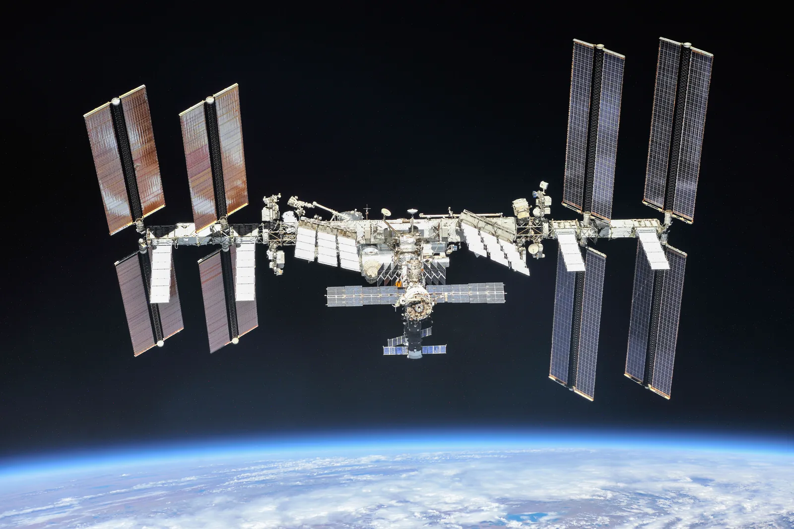

Satelliitit ja planeetat ympyräradalla
Miksi Kansainvälinen avaruusasema ISS ei putoa Maahan, ja miksi astronautit leijuvat sen sisällä?
Pohjatiedot
- Tasaisessa ympyräliikkeessä kappaleella on normaalikiihtyvyys $a_\text{n} = \tfrac{v^2}{r}$ kohti keskipistettä. Ratanopeus on $v = \tfrac{2\pi r}{T}$luku Normaalikiihtyvyys ja ympyräliikkeen liikeyhtälö
- Kahden kappaleen välinen gravitaatiovoima on $F = \gamma \tfrac{Mm}{r^2}$. Putoamiskiihtyvyys etäisyydellä $r$ on $g = \tfrac{\gamma M}{r^2}$luku Kappaleiden välinen gravitaatiovoima
Ydinpolku: tee vaiheet järjestyksessä. Ydinpolulla ei vain lasketa. Siinä myös tutkitaan, selitetään ja piirretään kuvaajia. Valinnainen-tehtävät ovat lisäharjoittelua. Valinnaisia tehtäviä on 3.
Luvun tärkeät käsitteet Vapaaehtoinen
Tutustu luvun tärkeisiin käsitteisiin. Voit kirjoittaa niiden merkitykset sinulle vahvimmalla kielellä tai useammalla kielellä.
- Kiertorata
- Rata, jota pitkin kappale kiertää toista kappaletta gravitaation varassa, esimerkiksi Kuun rata Maan ympäri.
- Satelliitti
- Kappale, joka kiertää paljon raskaampaa kappaletta. Kuu on Maan satelliitti, samoin GPS-satelliitit.
- Painottomuus
- Kappale putoaa vapaasti, joten tukivoima on nolla. Gravitaatio vaikuttaa silti koko ajan.
Pohdinta
Kansainvälinen avaruusasema ISS kiertää Maata noin $420\,\text{km}$:n korkeudella. Sen voi nähdä kirkkaana liikkuvana pisteenä Suomenkin taivaalla. Aseman massa on noin $420\,000\,\text{kg}$. Silti se ei putoa, vaikka mikään ei kannattele sitä. Aseman sisällä astronautit, työkalut ja vesipisarat leijuvat ilmassa.
Mikä pitää ISS:n radallaan, ja miksi astronautit leijuvat sen sisällä?
Valinnainen Kertaa: kokonaisvoima ympyräliikkeessä
Ennusta
Tee ennusteet ennen tutkimista 3 kysymystä
Ennuste 1: liian pieni nopeus
Ennuste 2: kevyt ja raskas satelliitti
Ennuste 3: miksi astronautti leijuu?
Tutki
Simulaatio
Käyttöohje
Valitse lähtökorkeus ja satelliitin massa. Säädä sitten lähtönopeutta $v$. Painike Laukaise lähettää satelliitin radan ylimmästä kohdasta vaakasuoraan oikealle. Musta viiva on satelliitin rata. Katkoviiva on ympyrä, jonka säde on lähtöhetken etäisyys. Oikealla (puhelimessa alla) oleva kuvaaja näyttää satelliitin korkeuden $h$ maanpinnasta. Vaaka-akselilla on, montako astetta satelliitti on kiertänyt Maan ympäri. Katkoviiva on lähtökorkeus. Kun rata on ympyrä, kuvaaja on vaakasuora viiva. Ensimmäisen kierroksen jälkeen lukemissa näkyvät radan alin ja ylin korkeus sekä kiertoaika $T$. Kun muutat jotakin arvoa, satelliitti palaa lähtöpaikalle. Nopeus muuttaa vain animaation tahtia. Kierros kestää ruudulla muutaman sekunnin, ja aika $t$ on simuloitua aikaa.
Mallin oletukset
Satelliittiin vaikuttaa vain Maan gravitaatiovoima $F = \gamma \tfrac{Mm}{r^2}$ kohti Maan keskipistettä. Maan massa on $M = 5{,}97 \cdot 10^{24}\,\text{kg}$ ja säde $R = 6371\,\text{km}$. Mallissa ei ole ilmanvastusta, Kuun ja Auringon gravitaatiota eikä Maan liikettä. Siksi esimerkiksi $155\,\text{km}$:n korkeudelle laskeutuva rata ei säilyisi todellisuudessa. Maa pysyy paikallaan, koska satelliitti on paljon kevyempi. Kuun etäisyydellä satelliitti on koekappale. Oikean Kuun oma massa liikuttaisi myös Maata. Kaikki lukemat ovat mallin arvoja.
Laskennan selitys
Rataa ei piirretä valmiina. Liike lasketaan pienin aika-askelin. Jokaisella askeleella lasketaan kiihtyvyys $\tfrac{F}{m} = \tfrac{\gamma M}{r^2}$ kohti Maan keskipistettä. Sen avulla päivitetään paikka ja nopeus (nopeus-Verlet-menetelmä, askel $\tfrac{1}{1500}$ paikallisen ympyräradan kiertoajasta). Kiertoaika $T$ on aika, jossa satelliitti kiertää täyden kierroksen Maan ympäri. Punaisen voimanuolen pituus on lähtöhetkellä sama kaikilla massoilla. Se pienenee kuten $\tfrac{1}{r^2}$. Voiman suuruus näkyy lukemissa. Sinisen nopeusnuolen pituus on verrannollinen vauhtiin.
Laukaise satelliitti vaakasuoraan ja katso, millaisen radan Maan gravitaatio sille piirtää.
Koe 1: millä nopeudella rata on ympyrä?
Testaa ennuste 1. Lähtökorkeus on $400\,\text{km}$ ja massa pysyy vakiona. Muuta vain lähtönopeutta. Laukaise satelliitti ensin nopeudella $7{,}00\,\text{km/s}$. Kokeile sitten esimerkiksi nopeuksia $7{,}60$, $8{,}00$ ja $7{,}70\,\text{km/s}$. Kirjaa jokaisen laukaisun jälkeen radan alin ja ylin korkeus. Etsi nopeus, jolla ne ovat lähes yhtä suuret.
Alkutila: lähtökorkeus $h$: $400\,\text{km}$, satelliitin massa $m$: $1000\,\text{kg}$, lähtönopeus $v$: $7{,}00\,\text{km/s}$. Vakiona: lähtökorkeus $h$, satelliitin massa $m$. Muutetaan: lähtönopeus $v$.
| lähtönopeus $v$ | alin korkeus $(\text{km})$ | ylin korkeus $(\text{km})$ |
|---|
Millä lähtönopeudella satelliitti kiertää ympyrärataa $400\,\text{km}$:n korkeudella? Vastaa kilometreinä sekunnissa kahden desimaalin tarkkuudella.
Vihje 1: ohjaava kysymys
Kun nopeus on liian pieni, alin korkeus jää alle $400\,\text{km}$:n. Kun nopeus on liian suuri, ylin korkeus nousee yli $400\,\text{km}$:n. Kumpaan suuntaan nopeutta pitää muuttaa?
Vihje 2: mikä yhteys
Puolita väli. Jos $7{,}60\,\text{km/s}$ on liian pieni ja $7{,}70\,\text{km/s}$ liian suuri, kokeile $7{,}65\,\text{km/s}$ ja jatka siitä.
Vihje 3: välivaihe
Rata on ympyrä, kun gravitaatiovoima on juuri se voima, jota ympyräliike vaatii: $\gamma \tfrac{Mm}{r^2} = \tfrac{mv^2}{r}$. Voit tarkistaa tuloksen laskulla. Laske $v = \sqrt{\tfrac{\gamma M}{r}}$, kun $r = 6771\,\text{km}$.
Näytä ratkaisu
Annettu
lähtökorkeus $h = 400\,\text{km}$; simulaatiossa $M = 5{,}97 \cdot 10^{24}\,\text{kg}$ ja $R = 6371\,\text{km}$; $\gamma = 6{,}674 \cdot 10^{-11}\,\tfrac{\text{N}\cdot\text{m}^2}{\text{kg}^2}$
Kysytty
ympyräradan lähtönopeus $v$ yksikössä km/s
Periaate
Simulaatiossa ympyrärata löytyy nopeudella, jolla radan alin ja ylin korkeus ovat yhtä suuret. Tuloksen voi tarkistaa laskemalla. Satelliittiin vaikuttaa vain gravitaatio, joten se on ympyräliikkeen kokonaisvoima, $\gamma \tfrac{Mm}{r^2} = \tfrac{mv^2}{r}$.
Kaava
$\gamma \tfrac{Mm}{r^2} = \tfrac{mv^2}{r}$, josta massa $m$ supistuu ja $v = \sqrt{\dfrac{\gamma M}{r}}$, missä $r = R + h$
Muunnokset
Sijoitus
joten
Vastaus
$7{,}67\,\text{km/s}$
Kahdella desimaalilla, koska simulaation nopeussäätimen askel on $0{,}01\,\text{km/s}$.
Järkevyys
Simulaatiossa nopeudella $7{,}67\,\text{km/s}$ alin korkeus on noin $396\,\text{km}$ ja ylin $400\,\text{km}$, ja nopeudella $7{,}68\,\text{km/s}$ ylin korkeus nousee noin $432\,\text{km}$:iin, joten ympyräradan nopeus on näiden välissä. Tulos on hieman suurempi kuin esimerkin ISS:n $7{,}66\,\text{km/s}$, koska rata on $20\,\text{km}$ alempana.
Lisää tutkittavaa 3 tehtävää
Koe 2: vaikuttaako satelliitin massa?
Testaa ennuste 2. Lähtökorkeus on $400\,\text{km}$ ja lähtönopeus $7{,}67\,\text{km/s}$. Muuta vain satelliitin massaa. Laukaise jokainen satelliitti. Kirjaa ensimmäisen kierroksen jälkeen alin ja ylin korkeus, kiertoaika ja gravitaatiovoima.
Alkutila: lähtökorkeus $h$: $400\,\text{km}$, lähtönopeus $v$ = $7{,}67\,\text{km/s}$, satelliitin massa $m$: $1\,\text{kg}$. Vakiona: lähtökorkeus $h$, lähtönopeus $v$. Muutetaan: satelliitin massa $m$.
| satelliitin massa $m$ | alin korkeus $(\text{km})$ | ylin korkeus $(\text{km})$ | $T$ $(\text{min})$ | $F$ $(\text{N})$ |
|---|
Todellisia ratoja
Tilastoaineisto · NASA: International Space Station Facts and Figures ja Moon Fact Sheet (2024); GPS.gov: Space Segment (2024); geostationaarisen radan kiertoaika on Maan pyörähdysaika eli tähtivuorokausi.
Taulukossa on neljän Maan satelliitin tiedot. Kaikki kiertävät lähes ympyrärataa. Taulukossa on radan säde $r$ (etäisyys Maan keskipisteestä) ja kiertoaika $T$.
| Satelliitti | $r$ (km) | $T$ |
|---|---|---|
| ISS | $6790$ | $92{,}9\,\text{min}$ |
| GPS-satelliitti | $26\,560$ | $11\,\text{h}\;58\,\text{min}$ |
| geostationaarinen satelliitti | $42\,164$ | $23\,\text{h}\;56\,\text{min}$ |
| Kuu | $384\,400$ | $27{,}32\,\text{d}$ |
Laske GPS-satelliitin ratanopeus taulukon arvoista. Vastaa kilometreinä sekunnissa.
Vihje 1: ohjaava kysymys
Satelliitti kulkee yhden kierroksen aikana ympyrän kehän pituuden. Mikä on kehän pituus?
Vihje 2: mikä yhteys
$v = \tfrac{2\pi r}{T}$. Muuta kiertoaika ensin sekunneiksi.
Vihje 3: välivaihe
$r = 2{,}656 \cdot 10^{7}\,\text{m}$.
Näytä ratkaisu
Annettu
GPS-satelliitin radan säde $r = 26\,560\,\text{km}$ ja kiertoaika $T = 11\,\text{h}\;58\,\text{min}$ taulukosta
Kysytty
ratanopeus $v$ yksikössä km/s
Periaate
Rata on lähes ympyrä, ja satelliitin vauhti on tasainen. Yhden kierroksen aikana satelliitti kulkee ympyrän kehän $2\pi r$. Siihen kuluu kiertoaika $T$.
Kaava
$v = \dfrac{2\pi r}{T}$
Muunnokset
Sijoitus
Vastaus
$3{,}87\,\text{km/s}$
Kolme merkitsevää numeroa kuten kiertoajassa $11\,\text{h}\;58\,\text{min}$.
Järkevyys
GPS-satelliitti on noin neljä kertaa kauempana Maan keskipisteestä kuin ISS ($26\,560\,\text{km} : 6790\,\text{km} \approx 3{,}9$), ja sen nopeus on noin puolet ISS:n nopeudesta $7{,}65\,\text{km/s}$. Ympyräradan malli $v = \sqrt{\tfrac{\gamma M}{r}}$ antaa samalle säteelle $3{,}873\,\text{km/s}$, lähes saman arvon.
Johtopäätös: mikä ratkaisee ympyräradan?
Kirjoita taulukoidesi perusteella vastaus.
Mitä radalle tapahtui, kun lähtönopeus oli liian pieni tai liian suuri? Millä nopeudella rata oli ympyrä? Vaikuttiko satelliitin massa rataan, vaikka gravitaatiovoima muuttui? Mikä voima pitää satelliitin ympyräradalla?
Mallivastaus
Kun lähtönopeus oli $7{,}00\,\text{km/s}$, satelliitti törmäsi Maahan. Nopeudella $7{,}60\,\text{km/s}$ se laskeutui noin $155\,\text{km}$:n korkeudelle ja palasi lähtökorkeudelle. Nopeudella $8{,}00\,\text{km/s}$ se nousi noin $1700\,\text{km}$:n korkeudelle. Ympyrärata syntyi noin nopeudella $7{,}67\,\text{km/s}$, jolloin alin ja ylin korkeus olivat lähes samat. Kokeessa 2 kaikki massat kiersivät saman radan noin $92{,}4\,\text{min}$:ssa, vaikka gravitaatiovoima kasvoi massan mukana ($8{,}69\,\text{N}$, $8{,}69\,\text{kN}$, $3{,}65\,\text{MN}$). Satelliitin pitää radallaan Maan gravitaatiovoima. Se on ainoa voima ja siis kokonaisvoima. Ympyräradalla se on juuri ympyräliikkeen vaatima voima $\tfrac{mv^2}{r}$. Molemmat ovat verrannollisia massaan, joten massa ei vaikuta ratanopeuteen. Arvot ovat mallin arvoja.
Arvioi oma vastauksesi
Merkitse kohdat, jotka sinun vastauksessasi jo on.
Kertaa asia teoriasta ja harjoittele tehtävillä.
Teoria
Ydinajatus
Satelliitti on kappale, joka kiertää toista kappaletta gravitaation vaikutuksesta. Kuu on Maan luonnollinen satelliitti. ISS ja sääsatelliitit ovat ihmisen rakentamia. Rata, jota pitkin satelliitti kiertää, on kiertorata. Avaruudessa satelliittiin vaikuttaa käytännössä vain yksi voima. Se on Maan gravitaatiovoima, ja se osoittaa kohti Maan keskipistettä. Koska se on ainoa voima, se on myös kokonaisvoima. Luvussa Normaalikiihtyvyys ja ympyräliikkeen liikeyhtälö opittiin tämä: tasaisessa ympyräliikkeessä kokonaisvoima osoittaa radan keskipisteeseen ja antaa kappaleelle normaalikiihtyvyyden. Ympyräradalla gravitaatiovoima tekee juuri näin. Se on kohtisuorassa nopeuteen nähden. Siksi se ei muuta vauhtia vaan kääntää nopeuden suuntaa koko ajan.
Satelliitti siis putoaa koko ajan kohti Maata, mutta ei osu siihen. Ilman gravitaatiota se jatkaisi suoraan radan tangentin suuntaan. Gravitaatio taivuttaa rataa. Kun vauhti on juuri sopiva, rata kaartuu samaa tahtia kuin Maan pinta kaartuu satelliitin alla. Silloin etäisyys Maan keskipisteestä pysyy samana ja rata on ympyrä.
Jos nopeus on pienempi, gravitaatio kääntää rataa jyrkemmin kuin ympyrä vaatisi. Satelliitti laskeutuu alemmas ja palaa sitten lähtökorkeudelle. Jos nopeus on paljon liian pieni, se osuu Maahan. Jos nopeus on suurempi, rata kaartuu loivemmin. Satelliitti nousee kauemmas ennen paluutaan. Näissä tapauksissa rata ei ole ympyrä vaan soikea, eikä tasaisen ympyräliikkeen malli kuvaa sitä.
Ratanopeus ympyräradalla
Satelliitin massa on $m$. Se kiertää keskuskappaletta ympyräradalla. Gravitaatiovoima on ainoa voima ja siis kokonaisvoima. Newtonin toisen lain mukaan sen on oltava yhtä suuri kuin ympyräliikkeeseen tarvittava voima $m a_\text{n} = \tfrac{m v^2}{r}$:
$$\gamma \frac{M m}{r^2} = \frac{m v^2}{r}$$
Kaavassa $\gamma = 6{,}674 \cdot 10^{-11}\,\tfrac{\text{N}\cdot\text{m}^2}{\text{kg}^2}$ on gravitaatiovakio. Massa $M$ on keskuskappaleen massa ($\text{kg}$) ja $m$ satelliitin massa ($\text{kg}$). Säde $r$ on radan säde ($\text{m}$) ja $v$ satelliitin ratanopeus ($\text{m/s}$). Radan säde mitataan keskuskappaleen keskipisteestä. Maan satelliitille $r = R + h$. Tässä $R = 6371\,\text{km}$ on Maan säde ja $h$ on satelliitin korkeus maanpinnasta.
Satelliitin massa $m$ on yhtälön kummallakin puolella, joten se supistuu pois. Kerrotaan yhtälö puolittain luvulla $r$ ja jaetaan massalla $m$. Saadaan $v^2 = \tfrac{\gamma M}{r}$. Ympyräradan ratanopeus on siis
$$v = \sqrt{\frac{\gamma M}{r}}$$
Ratanopeus riippuu vain keskuskappaleen massasta $M$ ja radan säteestä $r$. Satelliitin massa ei vaikuta siihen. Raskas avaruusasema ja pieni kuutiosatelliitti kiertävät samalla korkeudella samalla nopeudella. Mitä kauempana satelliitti kiertää, sitä pienempi sen ratanopeus on.
Satelliitti kulkee yhden kierroksen aikana ympyrän kehän $2\pi r$. Kiertoaika saadaan luvun Normaalikiihtyvyys ja ympyräliikkeen liikeyhtälö kaavasta $v = \tfrac{2\pi r}{T}$:
$$T = \frac{2\pi r}{v}$$
Tässä $T$ on kiertoaika ($\text{s}$). Kaukana kiertävän satelliitin rata on pidempi ja sen vauhti pienempi. Siksi kiertoaika kasvaa nopeasti, kun etäisyys kasvaa. ISS kiertää Maan noin puolessatoista tunnissa. Kuu kiertää Maan noin $27\,\text{d}$:ssä. Samasta yhtälöstä voi ratkaista myös keskuskappaleen massan $M$, kun mitataan radan säde ja kiertoaika. Näin on saatu esimerkiksi Maan, Auringon ja Marsin massat.
Geostationaarinen rata
Geostationaarinen satelliitti kiertää päiväntasaajan yläpuolella samaan suuntaan kuin Maa pyörii. Sen kiertoaika on sama kuin Maan pyörähdysaika, $23\,\text{h}\;56\,\text{min}$. Siksi satelliitti näyttää pysyvän taivaalla paikallaan, ja lautasantennin voi suunnata siihen kerran. Kiertoaika määrää radan säteen. Siksi kaikki geostationaariset satelliitit kiertävät samalla korkeudella, noin $35\,800\,\text{km}$:n korkeudella.
Painottomuus
Avaruusasemalla astronautit leijuvat, ja vaaka näyttäisi nollaa. Syy ei ole se, että painovoimaa ei olisi. ISS:n korkeudella $420\,\text{km}$ gravitaatiovoiman antama kiihtyvyys on $\tfrac{\gamma M}{r^2} \approx 8{,}6\,\text{m/s}^2$. Se on noin $88\,\%$ maanpinnan arvosta. Astronauttiin, jonka massa on $70\,\text{kg}$, vaikuttaa siis noin $605\,\text{N}$:n paino. Se on Maan gravitaatiovoima $F$. Maanpinnalla voima olisi $687\,\text{N}$.
Asema ja astronautti ovat vapaassa pudotuksessa. Kumpaankin vaikuttaa vain gravitaatio, ja kumpikin saa saman kiihtyvyyden kohti Maata. Ne putoavat samalla tavalla. Siksi lattia ei paina astronauttia eikä vaaka joudu tukemaan häntä. Tukivoima on nolla. Painottomuudessa kappaletta ei tue mikään. Siihen vaikuttaa vain gravitaatio, ja se putoaa samalla kiihtyvyydellä kuin ympäristönsä. Tukivoima on nolla, vaikka paino vaikuttaa koko ajan. Gravitaatio ei siis puutu.

Saman tilan voi kokea hetken maan päälläkin. Se tapahtuu hypyn aikana ja vapaasti putoavassa hississä. Sen voi kokea myös lentokoneessa, joka lentää heittoliikkeen rataa. Painottomuutta ei selitä mikään gravitaation kumoava "keskipakoisvoima". Jos jokin voima kumoaisi gravitaation, kokonaisvoima olisi nolla. Silloin asema jatkaisi suoraan eteenpäin eikä kiertäisi Maata.
Milloin ympyrämalli pätee
Tasaisen ympyräliikkeen malli on yksinkertaistus. Se kuvaa satelliitin liikettä hyvin, kun
- keskuskappale on paljon massiivisempi kuin satelliitti, joten sitä voidaan pitää paikallaan pysyvänä,
- muiden kappaleiden gravitaatio ja ilmanvastus ovat niin pieniä, että vain keskuskappaleen gravitaatio vaikuttaa,
- satelliitin nopeus on juuri sen radan säteen ympyräradan nopeus, jolloin etäisyys keskipisteestä pysyy vakiona.
Todellinen satelliitti poikkeaa aina hieman mallista. Matalalla radalla ohut yläilmakehä jarruttaa liikettä. Kuun ja Auringon gravitaatio vetää satelliittia. Lisäksi Maa on navoiltaan hieman litistynyt, joten sen massa ei jakaudu täsmälleen pallon tavoin. Yläilmakehän jarrutuksen vuoksi esimerkiksi ISS:n rataa nostetaan välillä rakettimoottoreilla.
Monet todelliset radat ovat lähes ympyröitä. Maan etäisyys Auringosta vaihtelee vain noin $3\,\%$ keskietäisyydestä. Siksi ympyrämalli kuvaa Maan rataa hyvin. Kuun etäisyys Maasta vaihtelee noin $11\,\%$. Malli antaa Kuulle silti hyvän likiarvon. Halleyn komeetan rata on sen sijaan hyvin pitkänomainen. Ympyrämalli ei sovi siihen lainkaan.
| Kappale | lähin etäisyys | suurin etäisyys |
|---|---|---|
| Maa | $147{,}1\,\text{milj. km}$ | $152{,}1\,\text{milj. km}$ |
| Kuu | $363\,300\,\text{km}$ | $405\,500\,\text{km}$ |
| Halleyn komeetta | $88\,\text{milj. km}$ | $5250\,\text{milj. km}$ |
Maan ja Halleyn komeetan etäisyydet on mitattu Auringosta. Kuun etäisyys on mitattu Maasta. Lähde: NASA, Planetary Fact Sheets (Earth, Moon) ja Halleyn komeetan ratatiedot, 2024.
Tarkoissa mittauksissa näkyy pieniä poikkeamia mallista. Kuun ratanopeus on mitatuista arvoista laskettuna $1{,}023\,\text{km/s}$. Malli antaa $1{,}018\,\text{km/s}$, joten mitattu arvo on noin $0{,}5\,\%$ suurempi. Syy on se, että Kuun massa on noin $\tfrac{1}{81}$ Maan massasta. Maa ja Kuu kiertävät yhteistä massakeskipistettä, eikä Maa pysy paikallaan. ISS:n korkeudella ohut ilma jarruttaa asemaa, ja rata madaltuu hitaasti. Siksi asemaa nostetaan moottoreilla säännöllisesti.
Yleinen virhekäsitys
"Avaruudessa ei ole painovoimaa, siksi astronautit leijuvat." Tämä väite on väärä. ISS:n korkeudella gravitaatio on lähes yhtä voimakas kuin maanpinnalla. Juuri se pitää aseman radallaan. Ilman gravitaatiota asema lentäisi suoraan pois. Astronautit leijuvat, koska he ja asema putoavat vapaasti samalla kiihtyvyydellä.
Toinen virhe on sijoittaa kaavaan $v = \sqrt{\tfrac{\gamma M}{r}}$ korkeus $h$. Pitää sijoittaa etäisyys Maan keskipisteestä, $r = R + h$. ISS:lle väärä sijoitus antaisi nopeudeksi noin $31\,\text{km/s}$. Se on nelinkertainen todelliseen verrattuna. Kolmas virhe on luulla, että raskaan satelliitin täytyy kiertää nopeammin. Suurempi massa saa suuremman gravitaatiovoiman. Se tarvitsee myös suuremman voiman kääntyäkseen. Siksi massa supistuu pois.
Tiivistelmä
- Satelliittiin vaikuttaa vain keskuskappaleen gravitaatiovoima. Se on kokonaisvoima, joka antaa ympyräradalla normaalikiihtyvyyden: $\gamma \tfrac{Mm}{r^2} = \tfrac{mv^2}{r}$.
- Ympyräradan ratanopeus on $v = \sqrt{\tfrac{\gamma M}{r}}$ ja kiertoaika $T = \tfrac{2\pi r}{v}$. Satelliitin massa ei vaikuta. Kauempana kiertävä satelliitti on hitaampi, ja sen kiertoaika on pidempi.
- Radan säde mitataan keskuskappaleen keskipisteestä: $r = R + h$.
- Painottomuudessa kappaletta ei tue mikään, ja se putoaa vapaasti: gravitaatio vaikuttaa, mutta tukivoima on nolla.
- Ympyrämalli pätee, kun keskuskappale on paljon satelliittia massiivisempi, muut voimat ovat pieniä ja rata on lähes ympyrä.
Valinnainen Palaa ennusteisiisi
Vertaa ennusteitasi kokeiden mallin arvoihin ja teoriaan. Palaa sitten alun kysymykseen: mikä pitää ISS:n radallaan, ja miksi astronautit leijuvat sen sisällä?
Haluaisitko muuttaa ennustettasi?
Esimerkit
Kun olet lukenut teorian, tee ohjatut esimerkit. Ensin katsot mallilaskun vaihe vaiheelta. Sitten teet valinnat itse. Vihjeet auttavat, jos jäät jumiin.
Esimerkki 1: ISS:n kiertoaika
Kansainvälinen avaruusasema ISS kiertää Maata lähes ympyrärataa noin $420\,\text{km}$:n korkeudella. Laske aseman ratanopeus ja kiertoaika. Maan massa on $M = 5{,}97 \cdot 10^{24}\,\text{kg}$ ja säde $R = 6371\,\text{km}$. Ilmanvastus jätetään huomiotta.
Vaihe 1/7
Tunnetut ja kysytty. Korkeus on $h = 420\,\text{km}$. Maan massa on $M = 5{,}97 \cdot 10^{24}\,\text{kg}$ ja säde $R = 6371\,\text{km}$. Gravitaatiovakio on $\gamma = 6{,}674 \cdot 10^{-11}\,\tfrac{\text{N}\cdot\text{m}^2}{\text{kg}^2}$. Kysytään ratanopeutta $v$ ja kiertoaikaa $T$.
Vaihe 2/7
Periaate. Ilmanvastus jätetään huomiotta. Silloin asemaan vaikuttaa vain Maan gravitaatiovoima. Se on siis kokonaisvoima. Ympyräradalla se antaa normaalikiihtyvyyden kohti Maan keskipistettä: $\gamma \tfrac{Mm}{r^2} = \tfrac{mv^2}{r}$. Radan säde mitataan Maan keskipisteestä, joten $r = R + h$.
Vaihe 3/7
Kaava ratkaistuna. Aseman massa supistuu pois:
$$\begin{aligned} r &= R + h \\ v &= \sqrt{\frac{\gamma M}{r}} \\ T &= \frac{2\pi r}{v} \end{aligned}$$
Vaihe 4/7
Yksikkömuunnokset. Muutetaan etäisyydet metreiksi:
Siis $r = 6{,}791 \cdot 10^{6}\,\text{m}$.
Vaihe 5/7
Sijoitus. $$\begin{aligned} &v = \sqrt{\frac{\gamma M}{r}} \\ &\gamma M = 6{,}674 \cdot 10^{-11}\,\tfrac{\text{N}\cdot\text{m}^2}{\text{kg}^2} \\ &\quad \cdot 5{,}97 \cdot 10^{24}\,\text{kg} \\ &\quad = 3{,}98438 \cdot 10^{14}\,\text{m}^3/\text{s}^2 \\ &v = \sqrt{\frac{3{,}98438 \cdot 10^{14}\,\text{m}^3/\text{s}^2}{6{,}791 \cdot 10^{6}\,\text{m}}} \\ &= 7659{,}7\,\text{m/s} \\[6pt] &T = \frac{2\pi r}{v} \\ &= \frac{2\pi \cdot 6{,}791 \cdot 10^{6}\,\text{m}}{7659{,}7\,\text{m/s}} \\ &= 5570{,}6\,\text{s} \end{aligned}$$
Vaihe 6/7
Tulos. Ratanopeus on $v \approx 7{,}66\,\text{km/s}$ ja kiertoaika
Tulokset on annettu kolmella merkitsevällä numerolla, kuten Maan massa $5{,}97 \cdot 10^{24}\,\text{kg}$.
Vaihe 7/7
Järkevyys. NASAn mukaan ISS kiertää Maan noin $92{,}9\,\text{min}$:ssa. Malli on siis hyvin lähellä mitattua. Aivan maanpinnan tasolla ympyräradan nopeus olisi
ISS on hieman kauempana, joten sen nopeus on hieman pienempi. Niin pitääkin olla.
Valinnainen Esimerkki 2: Etsi virhe
Esimerkki 3: Sovella uuteen tilanteeseen
Hubble-avaruusteleskooppi kiertää Maata lähes ympyrärataa. NASAn mukaan sen kiertoaika on noin $95{,}4\,\text{min}$. Kuinka korkealla maanpinnasta Hubble kiertää? Maan massa on $5{,}97 \cdot 10^{24}\,\text{kg}$ ja säde $6371\,\text{km}$. Vastaa kilometreinä.
Vihje 1: ohjaava kysymys
Tiedät nyt kiertoajan, mutta et nopeutta. Millä kahdella yhtälöllä nopeus, säde ja kiertoaika liittyvät toisiinsa ympyräradalla?
Vihje 2: mikä yhteys
Sijoita $v = \tfrac{2\pi r}{T}$ yhtälöön $v^2 = \tfrac{\gamma M}{r}$ ja ratkaise $r^3 = \tfrac{\gamma M T^2}{4\pi^2}$.
Vihje 3: välivaihe
joten
Muista lopuksi vähentää Maan säde.
Näytä ratkaisu
Annettu
kiertoaika $T = 95{,}4\,\text{min}$, Maan massa $M = 5{,}97 \cdot 10^{24}\,\text{kg}$ ja säde $R = 6371\,\text{km}$, $\gamma = 6{,}674 \cdot 10^{-11}\,\tfrac{\text{N}\cdot\text{m}^2}{\text{kg}^2}$
Kysytty
korkeus maanpinnasta $h$ kilometreinä
Periaate
Teleskooppiin vaikuttaa vain Maan gravitaatiovoima. Se on siis ympyräliikkeen kokonaisvoima: $\gamma \tfrac{Mm}{r^2} = \tfrac{mv^2}{r}$. Lisäksi tasaisessa ympyräliikkeessä $v = \tfrac{2\pi r}{T}$. Kun nopeus sijoitetaan yhtälöön, jäljelle jää yhtälö säteelle $r$.
Kaava
josta
$h = r - R$
Muunnokset
Sijoitus
joten
Vastaus
noin $544\,\text{km}$, kolme merkitsevää numeroa kuten kiertoajassa $95{,}4\,\text{min}$.
Järkevyys
Hubblen kiertoaika on hieman pidempi kuin ISS:n $92{,}9\,\text{min}$. Siksi sen täytyy kiertää hieman ylempänä kuin ISS ($420\,\text{km}$). Tulos on tämän mukainen. Tarkistus: säteellä $6915\,\text{km}$ ratanopeus on
ja $\sqrt{\tfrac{\gamma M}{r}}$ antaa saman arvon.
Kertaa luvun käsitteet
Jos valitset Kertaa myöhemmin, kortti menee kertauspakkaasi.
- Pyörähdys
- Yksi kokonainen kierros ympyräradalla.
- Satelliitti
- Kappale, joka kiertää gravitaation vaikutuksesta toista kappaletta.
- Kiertorata
- Reitti, jota satelliitti tai taivaankappale kulkee keskuskappaleensa ympäri.
- Kiertoaika
- Yhteen kokonaiseen kierrokseen keskuskappaleen ympäri kuluva aika.
- Geostationaarinen rata
- Päiväntasaajan yläpuolinen ympyrärata, jolla satelliitin kiertoaika on vuorokausi, joten se näyttää pysyvän paikallaan taivaalla.
Tehtävät
Taso 1 · perusharjoitus 9 tehtävää
Yksi kaava tai yksi päättelyaskel. Tee ensin ydintehtävät. Loput ovat lisäharjoitusta.
- Tehtävä 6-1Ydintehtävä
Sääsatelliitti NOAA-20 kiertää Maata lähes ympyrärataa, jonka säde on $7196\,\text{km}$. Maan massa on $5{,}97 \cdot 10^{24}\,\text{kg}$. Laske satelliitin ratanopeus. Anna vastaus kilometreinä sekunnissa.
Vastaus
$7{,}44\,\text{km/s}$
Näytä ratkaisu
Annettu
radan säde $r = 7196\,\text{km}$, Maan massa $M = 5{,}97 \cdot 10^{24}\,\text{kg}$, $\gamma = 6{,}674 \cdot 10^{-11}\,\tfrac{\text{N}\cdot\text{m}^2}{\text{kg}^2}$
Kysytty
ratanopeus $v$ kilometreinä sekunnissa
Periaate
Satelliittiin vaikuttaa vain Maan gravitaatiovoima. Se on siis ympyräliikkeen kokonaisvoima: $\gamma \tfrac{Mm}{r^2} = \tfrac{mv^2}{r}$. Satelliitin massa supistuu pois.
Kaava
$\gamma \dfrac{Mm}{r^2}$$= \dfrac{mv^2}{r}$josta $v = \sqrt{\dfrac{\gamma M}{r}}$
Muunnokset
$r$$= 7196\,\text{km}$$= 7{,}196 \cdot 10^{6}\,\text{m}$lopuksi $1\,\text{km/s} = 1000\,\text{m/s}$.
Sijoitus
$\gamma M$$= 6{,}674 \cdot 10^{-11}\,\tfrac{\text{N}\cdot\text{m}^2}{\text{kg}^2} \cdot 5{,}97 \cdot 10^{24}\,\text{kg}$$= 3{,}984 \cdot 10^{14}\,\text{m}^3/\text{s}^2$joten
$v$$= \sqrt{\dfrac{3{,}984 \cdot 10^{14}\,\text{m}^3/\text{s}^2}{7{,}196 \cdot 10^{6}\,\text{m}}}$$= 7441\,\text{m/s}$$= 7{,}441\,\text{km/s}$Vastaus
$7{,}44\,\text{km/s}$
Kolme merkitsevää numeroa kuten Maan massassa $5{,}97 \cdot 10^{24}\,\text{kg}$.
Järkevyys
NOAA-20 kiertää noin $825\,\text{km}$:n korkeudella eli ylempänä kuin ISS. ISS:n nopeus on noin $7{,}66\,\text{km/s}$. Kauempana kiertävä satelliitti on hitaampi, joten hieman pienempi nopeus on odotettu.
- Tehtävä 6-2
GPS-satelliitti kiertää Maata ympyrärataa, jonka säde on $26\,560\,\text{km}$, nopeudella $3{,}87\,\text{km/s}$. Kuinka pitkä on satelliitin kiertoaika? Anna vastaus tunteina.
Vastaus
$12{,}0\,\text{h}$
Näytä ratkaisu
Annettu
radan säde $r = 26\,560\,\text{km}$, ratanopeus $v = 3{,}87\,\text{km/s}$
Kysytty
kiertoaika $T$ tunteina
Periaate
Satelliitin vauhti on tasainen. Yhden kierroksen aikana se kulkee ympyrän kehän $2\pi r$. Siihen kuluu kiertoaika $T$.
Kaava
$v = \dfrac{2\pi r}{T}$, josta $T = \dfrac{2\pi r}{v}$
Muunnokset
$r$$= 26\,560\,\text{km}$$= 2{,}656 \cdot 10^{7}\,\text{m}$$v$$= 3{,}87\,\text{km/s}$$= 3870\,\text{m/s}$lopuksi $1\,\text{h} = 3600\,\text{s}$.
Sijoitus
$T$$= \dfrac{2\pi \cdot 2{,}656 \cdot 10^{7}\,\text{m}}{3870\,\text{m/s}}$$= 43\,122\,\text{s}$$= 43\,122 : 3600\,\text{h}$$= 11{,}98\,\text{h}$Vastaus
$12{,}0\,\text{h}$
Kolme merkitsevää numeroa kuten nopeudessa $3{,}87\,\text{km/s}$.
Järkevyys
GPS-satelliitit kiertävät Maan kahdesti vuorokaudessa, joten noin $12\,\text{h}$:n kiertoaika on oikea. Ympyrän kehä on noin $1{,}7 \cdot 10^{5}\,\text{km}$. Noin $4\,\text{km/s}$:n vauhdilla siihen kuluu noin $4 \cdot 10^{4}\,\text{s}$ eli yli $11\,\text{h}$.
- Tehtävä 6-3
Geostationaarinen viestintäsatelliitti kiertää Maata ympyrärataa. Radan säde on $42\,164\,\text{km}$. Maan massa on $5{,}97 \cdot 10^{24}\,\text{kg}$. Laske satelliitin normaalikiihtyvyys.
Vastaus
$0{,}224\,\text{m/s}^2$
Näytä ratkaisu
Annettu
radan säde $r = 42\,164\,\text{km}$, Maan massa $M = 5{,}97 \cdot 10^{24}\,\text{kg}$, $\gamma = 6{,}674 \cdot 10^{-11}\,\tfrac{\text{N}\cdot\text{m}^2}{\text{kg}^2}$
Kysytty
normaalikiihtyvyys $a_\text{n}$
Periaate
Satelliittiin vaikuttaa vain gravitaatiovoima, joten se on kokonaisvoima. Newtonin toisen lain mukaan $\gamma \tfrac{Mm}{r^2} = m a_\text{n}$. Normaalikiihtyvyys on siis sama kuin gravitaatiovoiman antama kiihtyvyys samalla etäisyydellä.
Kaava
$\gamma \dfrac{Mm}{r^2} = m a_\text{n}$, josta $a_\text{n} = \dfrac{\gamma M}{r^2}$
Muunnokset
$r$$= 42\,164\,\text{km}$$= 4{,}2164 \cdot 10^{7}\,\text{m}$Sijoitus
$\gamma M$$= 6{,}674 \cdot 10^{-11}\,\tfrac{\text{N}\cdot\text{m}^2}{\text{kg}^2} \cdot 5{,}97 \cdot 10^{24}\,\text{kg}$$= 3{,}984 \cdot 10^{14}\,\text{m}^3/\text{s}^2$joten
$a_\text{n}$$= \dfrac{3{,}984 \cdot 10^{14}\,\text{m}^3/\text{s}^2}{(4{,}2164 \cdot 10^{7}\,\text{m})^2}$$= 0{,}2241\,\text{m/s}^2$Vastaus
$0{,}224\,\text{m/s}^2$
Kolme merkitsevää numeroa kuten Maan massassa.
Järkevyys
Satelliitti on noin $6{,}6$ kertaa kauempana Maan keskipisteestä kuin maanpinta. Siksi kiihtyvyys on noin $\tfrac{9{,}81\,\text{m/s}^2}{6{,}6^2} \approx 0{,}23\,\text{m/s}^2$. Yksikkö:
$\tfrac{\text{N}\cdot\text{m}^2}{\text{kg}^2} \cdot \tfrac{\text{kg}}{\text{m}^2}$$= \tfrac{\text{N}}{\text{kg}}$$= \text{m/s}^2$ - Tehtävä 6-4
Kuu kiertää Maata lähes ympyrärataa, jonka säde on $384\,400\,\text{km}$, ja sen kiertoaika on $27{,}3\,\text{d}$. Laske Kuun ratanopeus. Anna vastaus kilometreinä sekunnissa.
Vastaus
$1{,}02\,\text{km/s}$
Näytä ratkaisu
Annettu
radan säde $r = 384\,400\,\text{km}$, kiertoaika $T = 27{,}3\,\text{d}$
Kysytty
Kuun ratanopeus $v$ kilometreinä sekunnissa
Periaate
Kuu kiertää lähes ympyrärataa lähes tasaisella vauhdilla. Kiertoajassa $T$ se kulkee ympyrän kehän $2\pi r$.
Kaava
$v = \dfrac{2\pi r}{T}$
Muunnokset
$r$$= 384\,400\,\text{km}$$= 3{,}844 \cdot 10^{8}\,\text{m}$$T$$= 27{,}3 \cdot 24 \cdot 3600\,\text{s}$$= 2{,}3587 \cdot 10^{6}\,\text{s}$lopuksi $1\,\text{km/s} = 1000\,\text{m/s}$.
Sijoitus
$v$$= \dfrac{2\pi \cdot 3{,}844 \cdot 10^{8}\,\text{m}}{2{,}3587 \cdot 10^{6}\,\text{s}}$$= 1024\,\text{m/s}$$= 1{,}024\,\text{km/s}$Vastaus
$1{,}02\,\text{km/s}$
Kolme merkitsevää numeroa kuten kiertoajassa $27{,}3\,\text{d}$.
Järkevyys
Kuu on noin $57$ kertaa kauempana kuin ISS ($384\,400 : 6790 \approx 57$). Ympyrämallin mukaan sen nopeuden pitäisi olla noin $\tfrac{1}{\sqrt{57}} \approx \tfrac{1}{7{,}5}$ ISS:n nopeudesta $7{,}66\,\text{km/s}$, eli noin $1{,}0\,\text{km/s}$.
- Tehtävä 6-5
Kuuta kiertävä luotain kulkee ympyrärataa, jonka säde on $1847\,\text{km}$. Kuun massa on $7{,}35 \cdot 10^{22}\,\text{kg}$. Laske luotaimen ratanopeus. Anna vastaus kilometreinä sekunnissa.
Vastaus
$1{,}63\,\text{km/s}$
Näytä ratkaisu
Annettu
radan säde $r = 1847\,\text{km}$, Kuun massa $M = 7{,}35 \cdot 10^{22}\,\text{kg}$, $\gamma = 6{,}674 \cdot 10^{-11}\,\tfrac{\text{N}\cdot\text{m}^2}{\text{kg}^2}$
Kysytty
luotaimen ratanopeus $v$ kilometreinä sekunnissa
Periaate
Luotaimeen vaikuttaa vain Kuun gravitaatiovoima. Se on siis ympyräliikkeen kokonaisvoima. Keskuskappaleena on nyt Kuu.
Kaava
$\gamma \dfrac{Mm}{r^2}$$= \dfrac{mv^2}{r}$josta $v = \sqrt{\dfrac{\gamma M}{r}}$
Muunnokset
$r$$= 1847\,\text{km}$$= 1{,}847 \cdot 10^{6}\,\text{m}$lopuksi $1\,\text{km/s} = 1000\,\text{m/s}$.
Sijoitus
$\gamma M$$= 6{,}674 \cdot 10^{-11}\,\tfrac{\text{N}\cdot\text{m}^2}{\text{kg}^2} \cdot 7{,}35 \cdot 10^{22}\,\text{kg}$$= 4{,}905 \cdot 10^{12}\,\text{m}^3/\text{s}^2$joten
$v$$= \sqrt{\dfrac{4{,}905 \cdot 10^{12}\,\text{m}^3/\text{s}^2}{1{,}847 \cdot 10^{6}\,\text{m}}}$$= 1630\,\text{m/s}$$= 1{,}630\,\text{km/s}$Vastaus
$1{,}63\,\text{km/s}$
Kolme merkitsevää numeroa kuten Kuun massassa $7{,}35 \cdot 10^{22}\,\text{kg}$.
Järkevyys
Kuun massa on noin $\tfrac{1}{81}$ Maan massasta. Radan säde on noin $0{,}27$ kertaa ISS:n radan säde. Siksi nopeus on noin
$7{,}7\,\text{km/s} \cdot \sqrt{\tfrac{1}{81 \cdot 0{,}27}}$$\approx 1{,}6\,\text{km/s}$ - Tehtävä 6-6Ydintehtävä
Astronautti leijuu avaruusasemalla. Asema kiertää Maata $400\,\text{km}$:n korkeudella. Mikä seuraavista selittää leijumisen?
Vastaus
Astronautti ja asema putoavat vapaasti samalla kiihtyvyydellä, joten tukivoimaa ei ole.
Näytä ratkaisu
Kysytty
miksi astronautti leijuu avaruusasemalla, vaikka Maan gravitaatio vaikuttaa häneen.
Periaate
Aseman korkeudella etäisyys Maan keskipisteestä on noin $6\,\%$ suurempi kuin maanpinnalla. Siksi gravitaatiovoima on yhä noin $88\,\%$ maanpinnan arvosta. Asema ja astronautti liikkuvat vain gravitaation vaikutuksesta samalla kiihtyvyydellä. Ne siis putoavat vapaasti. Painottomuus tarkoittaa, että tukivoimaa ei ole. Se ei tarkoita, että gravitaatiota ei ole.
Mallivastaus
Astronautti ja asema putoavat vapaasti samalla kiihtyvyydellä. Siksi asema ei työnnä astronauttia tukivoimalla. Hän leijuu aseman sisällä, vaikka gravitaatiovoima vaikuttaa häneen. Vaihtoehto, jonka mukaan gravitaatio on korkeudella lähes olematon, on väärä. Voima on yhä noin $88\,\%$ maanpinnan arvosta. Keskipakovoima ei vaikuta astronauttiin, kun tarkastellaan liikettä paikallaan olevasta koordinaatistosta. Sitä ei siis tarvita selitykseen. Gravitaatio on ainoa voima ja ympyräliikkeen kokonaisvoima, joten voimat eivät kumoa toisiaan. Vaihtoehto, jonka mukaan vauhti poistaa gravitaation vaikutuksen, on väärä. Suuri sivuttainen vauhti ei poista gravitaatiota. Se saa aseman putoamaan koko ajan Maan ohi.
- Tehtävä 6-7
Jupiterin kuu Io kiertää Jupiteria lähes ympyrärataa. Radan säde on $4{,}22 \cdot 10^{5}\,\text{km}$. Jupiterin massa on $1{,}90 \cdot 10^{27}\,\text{kg}$. Laske Ion ratanopeus. Anna vastaus kilometreinä sekunnissa.
Vastaus
$17{,}3\,\text{km/s}$
Näytä ratkaisu
Annettu
radan säde $r = 4{,}22 \cdot 10^{5}\,\text{km}$, Jupiterin massa $M = 1{,}90 \cdot 10^{27}\,\text{kg}$, $\gamma = 6{,}674 \cdot 10^{-11}\,\tfrac{\text{N}\cdot\text{m}^2}{\text{kg}^2}$
Kysytty
Ion ratanopeus $v$ kilometreinä sekunnissa
Periaate
Ioon vaikuttaa vain Jupiterin gravitaatiovoima. Se on siis ympyräliikkeen kokonaisvoima. Keskuskappale on nyt Jupiter.
Kaava
$\gamma \dfrac{Mm}{r^2}$$= \dfrac{mv^2}{r}$josta $v = \sqrt{\dfrac{\gamma M}{r}}$
Muunnokset
$r$$= 4{,}22 \cdot 10^{5}\,\text{km}$$= 4{,}22 \cdot 10^{8}\,\text{m}$lopuksi $1\,\text{km/s} = 1000\,\text{m/s}$.
Sijoitus
$\gamma M$$= 6{,}674 \cdot 10^{-11}\,\tfrac{\text{N}\cdot\text{m}^2}{\text{kg}^2} \cdot 1{,}90 \cdot 10^{27}\,\text{kg}$$= 1{,}268 \cdot 10^{17}\,\text{m}^3/\text{s}^2$joten
$v$$= \sqrt{\dfrac{1{,}268 \cdot 10^{17}\,\text{m}^3/\text{s}^2}{4{,}22 \cdot 10^{8}\,\text{m}}}$$= 17\,335\,\text{m/s}$$= 17{,}335\,\text{km/s}$Vastaus
$17{,}3\,\text{km/s}$
Kolme merkitsevää numeroa kuten massassa $1{,}90 \cdot 10^{27}\,\text{kg}$.
Järkevyys
Jupiterin massa on noin $318$ kertaa Maan massa. Ion rata on noin $62$ kertaa niin suuri kuin ISS:n rata ($4{,}22 \cdot 10^{8} : 6{,}79 \cdot 10^{6}$). Nopeus on noin $7{,}66\,\text{km/s} \cdot \sqrt{\tfrac{318}{62}} \approx 17\,\text{km/s}$.
- Tehtävä 6-8
Maa kiertää Aurinkoa lähes ympyrärataa. Radan säde on $1{,}496 \cdot 10^{8}\,\text{km}$ ja kiertoaika on $365{,}25\,\text{d}$. Laske Maan ratanopeus. Anna vastaus kilometreinä sekunnissa.
Vastaus
$29{,}79\,\text{km/s}$
Näytä ratkaisu
Annettu
radan säde $r = 1{,}496 \cdot 10^{8}\,\text{km}$, kiertoaika $T = 365{,}25\,\text{d}$
Kysytty
Maan ratanopeus $v$ kilometreinä sekunnissa
Periaate
Maa kiertää Aurinkoa lähes ympyrärataa lähes tasaisella vauhdilla. Se kulkee kiertoajassa $T$ ympyrän kehän $2\pi r$.
Kaava
$v = \dfrac{2\pi r}{T}$
Muunnokset
$r$$= 1{,}496 \cdot 10^{8}\,\text{km}$$= 1{,}496 \cdot 10^{11}\,\text{m}$$T$$= 365{,}25 \cdot 24 \cdot 3600\,\text{s}$$= 3{,}15576 \cdot 10^{7}\,\text{s}$lopuksi $1\,\text{km/s} = 1000\,\text{m/s}$.
Sijoitus
$v$$= \dfrac{2\pi \cdot 1{,}496 \cdot 10^{11}\,\text{m}}{3{,}15576 \cdot 10^{7}\,\text{s}}$$= 29\,786\,\text{m/s}$$= 29{,}786\,\text{km/s}$Vastaus
$29{,}79\,\text{km/s}$
Neljä merkitsevää numeroa kuten radan säteessä $1{,}496 \cdot 10^{8}\,\text{km}$.
Järkevyys
Kehä on noin
$2\pi \cdot 1{,}5 \cdot 10^{11}\,\text{m}$$\approx 9{,}4 \cdot 10^{11}\,\text{m}$Vuodessa on noin $3{,}16 \cdot 10^{7}\,\text{s}$. Nopeus on siis noin
$9{,}4 \cdot 10^{11}\,\text{m} : 3{,}16 \cdot 10^{7}\,\text{s}$$\approx 30\,\text{km/s}$Se on noin neljä kertaa ISS:n nopeus $7{,}66\,\text{km/s}$.
- Tehtävä 6-9
Marsin kuu Phobos kiertää Marsia lähes ympyrärataa, jonka säde on $9380\,\text{km}$. Marsin massa on $6{,}42 \cdot 10^{23}\,\text{kg}$.
Mikä on Phoboksen kiertoajan suuruusluokka ympyräradan mallin mukaan? Suuruusluokka kertoo luvun koon suunnilleen.
Vastaus
noin $7{,}7\,\text{h}$
Näytä ratkaisu
Kysytty
Phoboksen kiertoajan $T$ suuruusluokka, kun radan säde on $r = 9380\,\text{km}$ ja Marsin massa $M = 6{,}42 \cdot 10^{23}\,\text{kg}$.
Periaate
Phobokseen vaikuttaa vain Marsin gravitaatiovoima. Se on ympyräliikkeen kokonaisvoima: $\gamma \tfrac{Mm}{r^2} = \tfrac{mv^2}{r}$. Siitä saadaan ratanopeus $v = \sqrt{\tfrac{\gamma M}{r}}$ ja kiertoaika $T = \tfrac{2\pi r}{v}$. Säde muutetaan metreiksi ennen sijoitusta. Lopuksi sekunnit muutetaan tunneiksi.
Mallivastaus
Säde on $r = 9380\,\text{km} = 9{,}38 \cdot 10^{6}\,\text{m}$.
$$\begin{aligned} \gamma M &= 6{,}674 \cdot 10^{-11}\,\tfrac{\text{N}\cdot\text{m}^2}{\text{kg}^2} \\ &\quad \cdot 6{,}42 \cdot 10^{23}\,\text{kg} \\ \quad &= 4{,}285 \cdot 10^{13}\,\text{m}^3/\text{s}^2 \\ v &= \sqrt{\frac{4{,}285 \cdot 10^{13}\,\text{m}^3/\text{s}^2}{9{,}38 \cdot 10^{6}\,\text{m}}} \\ \phantom{v} &\approx 2137\,\text{m/s} \\ T &= \frac{2\pi \cdot 9{,}38 \cdot 10^{6}\,\text{m}}{2137\,\text{m/s}} \\ \phantom{T} &\approx 2{,}76 \cdot 10^{4}\,\text{s} \end{aligned}$$
Tunneiksi muutettuna $T = \tfrac{2{,}76 \cdot 10^{4}\,\text{s}}{3600\,\text{s/h}} \approx 7{,}7\,\text{h}$. Kiertoaika on siis noin $7{,}7\,\text{h}$ eli muutama tunti. Muut vaihtoehdot syntyvät tyypillisistä virheistä. Neliöjuuren unohtaminen antaa noin $0{,}0036\,\text{h}$. Säteen jättäminen kilometreiksi neliöjuuren alle antaa noin $0{,}24\,\text{h}$. Sekuntien jakaminen luvulla $60$ antaa noin $460\,\text{h}$. Tulos on järkevä: ratanopeus $2{,}1\,\text{km/s}$ on pienempi kuin Maan lähellä kiertävän satelliitin. Syy on se, että Marsin massa on noin kymmenesosa Maan massasta.
Taso 2 · soveltava harjoitus 7 tehtävää
Kaksi vaihetta, mittausaineiston käsittely, yksikkömuunnos tai kaavan ratkaiseminen. Tee ensin ydintehtävät. Loput ovat lisäharjoitusta.
- Tehtävä 6-10
Satelliitti kiertää Maata ympyrärataa nopeudella $5{,}00\,\text{km/s}$. Maan massa on $5{,}97 \cdot 10^{24}\,\text{kg}$ ja säde $6371\,\text{km}$. Kuinka korkealla maanpinnasta satelliitti kiertää? Anna vastaus kilometreinä.
Vastaus
$9570\,\text{km}$
Näytä ratkaisu
Annettu
ratanopeus $v = 5{,}00\,\text{km/s}$, Maan massa $M = 5{,}97 \cdot 10^{24}\,\text{kg}$ ja säde $R = 6371\,\text{km}$, $\gamma = 6{,}674 \cdot 10^{-11}\,\tfrac{\text{N}\cdot\text{m}^2}{\text{kg}^2}$
Kysytty
korkeus maanpinnasta $h$ kilometreinä
Periaate
Gravitaatiovoima on satelliitin ainoa voima ja siis ympyräliikkeen kokonaisvoima. Yhtälöstä ratkaistaan ensin radan säde $r$. Se mitataan Maan keskipisteestä. Korkeus on $h = r - R$.
Kaava
$\gamma \dfrac{Mm}{r^2}$$= \dfrac{mv^2}{r}$josta $r = \dfrac{\gamma M}{v^2}$ ja $h = r - R$
Muunnokset
$v$$= 5{,}00\,\text{km/s}$$= 5000\,\text{m/s}$$R$$= 6371\,\text{km}$$= 6{,}371 \cdot 10^{6}\,\text{m}$Sijoitus
$\gamma M$$= 6{,}674 \cdot 10^{-11}\,\tfrac{\text{N}\cdot\text{m}^2}{\text{kg}^2} \cdot 5{,}97 \cdot 10^{24}\,\text{kg}$$= 3{,}984 \cdot 10^{14}\,\text{m}^3/\text{s}^2$joten
$r$$= \dfrac{3{,}984 \cdot 10^{14}\,\text{m}^3/\text{s}^2}{(5000\,\text{m/s})^2}$$= 1{,}5938 \cdot 10^{7}\,\text{m}$joten
$h$$= 1{,}5938 \cdot 10^{7}\,\text{m} - 6{,}371 \cdot 10^{6}\,\text{m}$$= 9{,}567 \cdot 10^{6}\,\text{m}$$= 9567\,\text{km}$Vastaus
$9570\,\text{km}$
Kolme merkitsevää numeroa kuten nopeudessa $5{,}00\,\text{km/s}$.
Järkevyys
Nopeus $5{,}00\,\text{km/s}$ on ISS:n $7{,}66\,\text{km/s}$ ja GPS-satelliitin $3{,}87\,\text{km/s}$ välissä. Myös radan säde $15\,900\,\text{km}$ on näiden satelliittien säteiden välissä ($6790\,\text{km}$ ja $26\,560\,\text{km}$). Tarkistus:
$\sqrt{\tfrac{\gamma M}{r}}$$= \sqrt{\tfrac{3{,}984 \cdot 10^{14}}{1{,}594 \cdot 10^{7}}}\,\text{m/s}$$\approx 5000\,\text{m/s}$ - Tehtävä 6-11Ydintehtävä
Marsia kiertävä luotain kulkee ympyrärataa $400\,\text{km}$:n korkeudella Marsin pinnasta. Marsin massa on $6{,}42 \cdot 10^{23}\,\text{kg}$ ja säde $3390\,\text{km}$. Laske luotaimen ratanopeus. Anna vastaus kilometreinä sekunnissa.
Vastaus
$3{,}36\,\text{km/s}$
Näytä ratkaisu
Annettu
korkeus $h = 400\,\text{km}$, Marsin massa $M = 6{,}42 \cdot 10^{23}\,\text{kg}$ ja säde $R = 3390\,\text{km}$, $\gamma = 6{,}674 \cdot 10^{-11}\,\tfrac{\text{N}\cdot\text{m}^2}{\text{kg}^2}$
Kysytty
ratanopeus $v$ kilometreinä sekunnissa
Periaate
Luotaimeen vaikuttaa vain Marsin gravitaatiovoima. Se on siis ympyräliikkeen kokonaisvoima. Radan säde mitataan Marsin keskipisteestä: $r = R + h$.
Kaava
$\gamma \dfrac{Mm}{r^2}$$= \dfrac{mv^2}{r}$josta $v = \sqrt{\dfrac{\gamma M}{R + h}}$
Muunnokset
$r$$= 3390\,\text{km} + 400\,\text{km}$$= 3790\,\text{km}$$= 3{,}790 \cdot 10^{6}\,\text{m}$lopuksi $1\,\text{km/s} = 1000\,\text{m/s}$.
Sijoitus
$\gamma M$$= 6{,}674 \cdot 10^{-11}\,\tfrac{\text{N}\cdot\text{m}^2}{\text{kg}^2} \cdot 6{,}42 \cdot 10^{23}\,\text{kg}$$= 4{,}285 \cdot 10^{13}\,\text{m}^3/\text{s}^2$joten
$v$$= \sqrt{\dfrac{4{,}285 \cdot 10^{13}\,\text{m}^3/\text{s}^2}{3{,}790 \cdot 10^{6}\,\text{m}}}$$= 3362\,\text{m/s}$$= 3{,}362\,\text{km/s}$Vastaus
$3{,}36\,\text{km/s}$
Kolme merkitsevää numeroa kuten Marsin massassa $6{,}42 \cdot 10^{23}\,\text{kg}$.
Järkevyys
Samalla korkeudella Maan ympäri nopeus on noin $7{,}7\,\text{km/s}$. Marsin massa on vain noin kymmenesosa Maan massasta, ja säde on noin puolet. Siksi nopeuden pitää olla selvästi pienempi:
$7{,}7\,\text{km/s} \cdot \sqrt{0{,}107 \cdot \tfrac{6771}{3790}}$$\approx 3{,}4\,\text{km/s}$ - Tehtävä 6-12
Kuun pinnalla putoamiskiihtyvyys on $1{,}62\,\text{m/s}^2$ ja Kuun säde on $1737\,\text{km}$.
Kuinka suuri nopeus tarvitaan, jotta luotain kiertäisi Kuuta ympyrärataa aivan sen pinnan yläpuolella? Kuulla ei ole ilmakehää. Anna vastaus kilometreinä sekunnissa.
Vastaus
$1{,}68\,\text{km/s}$
Näytä ratkaisu
Annettu
Kuun pinnan putoamiskiihtyvyys $g = 1{,}62\,\text{m/s}^2$ ja säde $R = 1737\,\text{km}$; ei ilmakehää
Kysytty
ympyräradan nopeus $v$ aivan Kuun pinnan yläpuolella
Periaate
Luotaimeen vaikuttaa vain Kuun gravitaatiovoima. Se on ympyräliikkeen kokonaisvoima. Pinnan tasolla gravitaatiovoiman antama kiihtyvyys on $\tfrac{\gamma M}{R^2} = g$ (luku Kappaleiden välinen gravitaatiovoima). Kuun massaa ei siis tarvita. Normaalikiihtyvyyden on oltava $g$.
Kaava
$m g = \dfrac{m v^2}{R}$, josta $v = \sqrt{g R}$
Muunnokset
$R$$= 1737\,\text{km}$$= 1{,}737 \cdot 10^{6}\,\text{m}$lopuksi $1\,\text{km/s} = 1000\,\text{m/s}$.
Sijoitus
$v$$= \sqrt{1{,}62\,\text{m/s}^2 \cdot 1{,}737 \cdot 10^{6}\,\text{m}}$$= 1677\,\text{m/s}$$= 1{,}677\,\text{km/s}$Vastaus
$1{,}68\,\text{km/s}$
Kolme merkitsevää numeroa kuten putoamiskiihtyvyydessä $1{,}62\,\text{m/s}^2$.
Järkevyys
Tulos on hieman suurempi kuin tason 1 luotaimen $1{,}63\,\text{km/s}$. Se luotain kiertää $110\,\text{km}$ ylempänä. Alempana kiertävä kappale on nopeampi. Yksikkö:
$\sqrt{\tfrac{\text{m}}{\text{s}^2} \cdot \text{m}}$$= \tfrac{\text{m}}{\text{s}}$ - Tehtävä 6-13
Astronautti, jonka massa on $75\,\text{kg}$, työskentelee avaruusasemalla $410\,\text{km}$:n korkeudella. Maan massa on $5{,}97 \cdot 10^{24}\,\text{kg}$ ja säde $6371\,\text{km}$. Kuinka suuri gravitaatiovoima astronauttiin vaikuttaa, vaikka hän on painoton?
Vastaus
$650\,\text{N}$
Näytä ratkaisu
Annettu
astronautin massa $m = 75\,\text{kg}$, korkeus $h = 410\,\text{km}$, Maan massa $M = 5{,}97 \cdot 10^{24}\,\text{kg}$ ja säde $R = 6371\,\text{km}$, $\gamma = 6{,}674 \cdot 10^{-11}\,\tfrac{\text{N}\cdot\text{m}^2}{\text{kg}^2}$
Kysytty
astronauttiin vaikuttava gravitaatiovoima $F$
Periaate
Painottomuus ei tarkoita, että gravitaatiota ei olisi. Astronauttiin vaikuttaa Maan gravitaatiovoima. Se lasketaan gravitaatiolaista etäisyydellä $r = R + h$ Maan keskipisteestä. Leijuminen johtuu vapaasta putoamisesta, ei voiman puuttumisesta.
Kaava
$F = \gamma \dfrac{M m}{r^2}$, missä $r = R + h$
Muunnokset
$r$$= 6371\,\text{km} + 410\,\text{km}$$= 6781\,\text{km}$$= 6{,}781 \cdot 10^{6}\,\text{m}$Sijoitus
$\gamma M$$= 6{,}674 \cdot 10^{-11}\,\tfrac{\text{N}\cdot\text{m}^2}{\text{kg}^2} \cdot 5{,}97 \cdot 10^{24}\,\text{kg}$$= 3{,}984 \cdot 10^{14}\,\text{m}^3/\text{s}^2$joten
$F$$= \dfrac{3{,}984 \cdot 10^{14}\,\text{m}^3/\text{s}^2 \cdot 75\,\text{kg}}{(6{,}781 \cdot 10^{6}\,\text{m})^2}$$= 649{,}9\,\text{N}$Vastaus
$650\,\text{N}$
Eli $6{,}5 \cdot 10^{2}\,\text{N}$, kaksi merkitsevää numeroa kuten massassa $75\,\text{kg}$.
Järkevyys
Maanpinnalla sama astronautti painaa $75\,\text{kg} \cdot 9{,}81\,\text{m/s}^2 \approx 736\,\text{N}$. Asemalla voima on noin $88\,\%$ tästä. Syy on se, että etäisyys keskipisteestä on vain noin $6\,\%$ suurempi: $\left(\tfrac{6371}{6781}\right)^2 \approx 0{,}88$.
- Tehtävä 6-14Ydintehtävä
Taulukossa on Jupiterin neljän suurimman kuun ratasäde $r$ ja kiertoaika $T$ (esimerkkiaineisto, pyöristetty oikeista arvoista). Kuut kiertävät Jupiteria lähes ympyräratoja.
Ympyräradan mallista seuraa $T^2 = \dfrac{4\pi^2}{\gamma M} r^3$. Tässä $M$ on Jupiterin massa. Laske jokaiselle kuulle suhde $\dfrac{r^3}{T^2}$ SI-yksiköissä. Totea, että suhde on lähes sama.
Määritä Jupiterin massa suhteiden keskiarvosta. Anna vastaus yksikössä $10^{27}\,\text{kg}$.
Jupiterin kuiden ratasäde ja kiertoaika Kuu $r\,(10^{3}\,\text{km})$ $T\,(\text{d})$ Io 421,7 1,769 Europa 671,1 3,551 Ganymedes 1070 7,155 Callisto 1883 16,69 Vastaus
$1{,}90 \cdot 10^{27}\,\text{kg}$
Näytä ratkaisu
Annettu
taulukosta $r$ ja $T$ neljälle kuulle, $\gamma = 6{,}674 \cdot 10^{-11}\,\tfrac{\text{N}\cdot\text{m}^2}{\text{kg}^2}$
Kysytty
Jupiterin massa $M$ yksikössä $10^{27}\,\text{kg}$
Periaate
Kuuhun vaikuttaa vain Jupiterin gravitaatiovoima. Se on ympyräliikkeen kokonaisvoima: $\gamma \tfrac{Mm}{r^2} = \tfrac{mv^2}{r}$ ja $v = \tfrac{2\pi r}{T}$. Tämä on oppitunnin kaava $v = \sqrt{\tfrac{\gamma M}{r}}$ yhdistettynä kaavaan $v = \tfrac{2\pi r}{T}$. Siitä seuraa, että suhde $\tfrac{r^3}{T^2}$ on sama kaikille kuille. Suhde riippuu vain keskuskappaleen massasta. Mittausten pienet erot tasataan keskiarvolla.
Kaava
$\dfrac{\gamma M}{r}$$= \dfrac{4\pi^2 r^2}{T^2}$josta
$\dfrac{r^3}{T^2}$$= \dfrac{\gamma M}{4\pi^2}$$M$$= \dfrac{4\pi^2}{\gamma} \cdot \dfrac{r^3}{T^2}$Muunnokset
$r$ metreiksi: $421{,}7 \cdot 10^{3}\,\text{km} = 4{,}217 \cdot 10^{8}\,\text{m}$, $6{,}711 \cdot 10^{8}\,\text{m}$, $1{,}070 \cdot 10^{9}\,\text{m}$ ja $1{,}883 \cdot 10^{9}\,\text{m}$. $T$ sekunneiksi: $1{,}769 \cdot 86\,400\,\text{s} = 152\,842\,\text{s}$, $3{,}551 \cdot 86\,400\,\text{s} = 306\,806\,\text{s}$, $7{,}155 \cdot 86\,400\,\text{s} = 618\,192\,\text{s}$ ja $16{,}69 \cdot 86\,400\,\text{s} = 1\,442\,016\,\text{s}$.
Sijoitus
Suhteet ovat Iolle $3{,}2102 \cdot 10^{15}\,\text{m}^3/\text{s}^2$, Europalle $3{,}2110 \cdot 10^{15}\,\text{m}^3/\text{s}^2$, Ganymedekselle $3{,}2056 \cdot 10^{15}\,\text{m}^3/\text{s}^2$ ja Callistolle $3{,}2108 \cdot 10^{15}\,\text{m}^3/\text{s}^2$. Ne eroavat toisistaan alle $0{,}2\,\%$. Summa on $1{,}2837 \cdot 10^{16}\,\text{m}^3/\text{s}^2$, joten keskiarvo on $3{,}2094 \cdot 10^{15}\,\text{m}^3/\text{s}^2$. Tällöin
$4\pi^2 \cdot 3{,}2094 \cdot 10^{15}\,\text{m}^3/\text{s}^2$$= 1{,}2670 \cdot 10^{17}\,\text{m}^3/\text{s}^2$joten
$M$$= \dfrac{1{,}2670 \cdot 10^{17}\,\text{m}^3/\text{s}^2}{6{,}674 \cdot 10^{-11}\,\text{N}\cdot\text{m}^2/\text{kg}^2}$$= 1{,}898 \cdot 10^{27}\,\text{kg}$Vastaus
$1{,}90 \cdot 10^{27}\,\text{kg}$
Kolme merkitsevää numeroa kuten kiertoajoissa ja ratasäteissä.
Järkevyys
Tulos on noin $318$ kertaa Maan massa $5{,}97 \cdot 10^{24}\,\text{kg}$. Se on Jupiterin tunnettu massa. Myös suhteet sopivat yhteen: Callisto on $1883 : 421{,}7 \approx 4{,}47$ kertaa kauempana kuin Io. Sen kiertoaika on $4{,}47^{1{,}5} \approx 9{,}4$ kertaa pidempi. Se vastaa suhdetta $16{,}69 : 1{,}769 \approx 9{,}4$.
- Tehtävä 6-15
Taulukossa on neljän Maata kiertävän satelliitin korkeus maanpinnasta $h$ ja ratanopeus $v$ (esimerkkiaineisto). Radat ovat lähes ympyröitä. Yksi nopeuksista on kirjattu taulukkoon väärin.
Maan massa on $5{,}97 \cdot 10^{24}\,\text{kg}$ ja säde $6371\,\text{km}$. Laske jokaiselle satelliitille ympyräradan nopeus ja etsi väärä arvo.
Mikä on väärän nopeuden oikea arvo? Anna vastaus kilometreinä sekunnissa.
Satelliittien korkeus ja ratanopeus Satelliitti $h\,(\text{km})$ $v\,(\text{km/s})$ A 400 7,67 B 1200 7,52 C 19100 3,96 D 35786 3,07 Vastaus
$7{,}25\,\text{km/s}$
Näytä ratkaisu
Annettu
taulukosta korkeudet $h$ ja nopeudet $v$, Maan massa $M = 5{,}97 \cdot 10^{24}\,\text{kg}$ ja säde $R = 6371\,\text{km}$, $\gamma = 6{,}674 \cdot 10^{-11}\,\tfrac{\text{N}\cdot\text{m}^2}{\text{kg}^2}$
Kysytty
väärän nopeuden oikea arvo $v$ kilometreinä sekunnissa
Periaate
Satelliittiin vaikuttaa vain gravitaatiovoima. Se on ympyräliikkeen kokonaisvoima. Siksi ratanopeus riippuu radan säteestä $r = R + h$. Säde mitataan Maan keskipisteestä. Lasketaan jokaisen rivin nopeus ja verrataan sitä taulukon arvoon.
Kaava
$\gamma \dfrac{Mm}{r^2}$$= \dfrac{mv^2}{r}$josta $v = \sqrt{\dfrac{\gamma M}{R + h}}$
Muunnokset
$r = R + h$ on riveillä $6771\,\text{km}$, $7571\,\text{km}$, $25\,471\,\text{km}$ ja $42\,157\,\text{km}$. Ne muutetaan metreiksi, esimerkiksi $7571\,\text{km} = 7{,}571 \cdot 10^{6}\,\text{m}$; lopuksi $1\,\text{km/s} = 1000\,\text{m/s}$.
Sijoitus
$\gamma M = 3{,}984 \cdot 10^{14}\,\text{m}^3/\text{s}^2$. Rivien nopeudet ovat A: $7{,}67\,\text{km/s}$, C: $3{,}96\,\text{km/s}$ ja D: $3{,}07\,\text{km/s}$. Ne täsmäävät taulukon kanssa. Riville B tulee
$v$$= \sqrt{\dfrac{3{,}984 \cdot 10^{14}\,\text{m}^3/\text{s}^2}{7{,}571 \cdot 10^{6}\,\text{m}}}$$= 7254\,\text{m/s}$$= 7{,}254\,\text{km/s}$kun taulukossa on $7{,}52\,\text{km/s}$.
Vastaus
satelliitin B nopeus on $7{,}25\,\text{km/s}$, kolme merkitsevää numeroa kuten taulukon nopeuksissa. Taulukossa kaksi numeroa on vaihtanut paikkaa ($7{,}52$ ja $7{,}25$).
Järkevyys
Satelliitin B säde on $7571 : 6771 \approx 1{,}118$ kertaa A:n säde. Nopeus on siis $\tfrac{7{,}67\,\text{km/s}}{\sqrt{1{,}118}} \approx 7{,}25\,\text{km/s}$. Nopeus pienenee, kun korkeus kasvaa. B:n oikea arvo sopii A:n ja C:n arvojen väliin.
- Tehtävä 6-16
Kaksi satelliittia viedään ympyräradalle $800\,\text{km}$:n korkeudelle Maan pinnasta. Niiden massat ovat $500\,\text{kg}$ ja $2000\,\text{kg}$. Oppilas päättelee: ”Raskaampaan satelliittiin vaikuttaa nelinkertainen gravitaatiovoima, joten se kiertää nopeammin.”
Maan massa on $5{,}97 \cdot 10^{24}\,\text{kg}$ ja säde $6371\,\text{km}$.
a) Laske kumpaankin satelliittiin vaikuttava gravitaatiovoima.
b) Laske raskaamman satelliitin ratanopeus.
c) Selitä, missä oppilaan päättelyssä on virhe.
Vastauskenttään tulee kohdan b) tulos kilometreinä sekunnissa.
Vastaus
$7{,}45\,\text{km/s}$
Näytä ratkaisu
Annettu
massat $m_1 = 500\,\text{kg}$ ja $m_2 = 2000\,\text{kg}$, korkeus $h = 800\,\text{km}$, Maan massa $M = 5{,}97 \cdot 10^{24}\,\text{kg}$ ja säde $R = 6371\,\text{km}$, $\gamma = 6{,}674 \cdot 10^{-11}\,\tfrac{\text{N}\cdot\text{m}^2}{\text{kg}^2}$
Kysytty
a) gravitaatiovoimat $F_1$ ja $F_2$, b) raskaamman satelliitin ratanopeus $v$ kilometreinä sekunnissa, c) virhe oppilaan päättelyssä
Periaate
Satelliittiin vaikuttaa vain Maan gravitaatiovoima. Se on ympyräliikkeen kokonaisvoima: $\gamma \tfrac{Mm}{r^2} = \tfrac{mv^2}{r}$. Raskaampaan satelliittiin vaikuttaa todella suurempi voima. Mutta myös sen massa on suurempi, joten sen tarvitsema voima $\tfrac{mv^2}{r}$ kasvaa samassa suhteessa. Massa supistuu pois. Ratanopeus riippuu vain radan säteestä ja Maan massasta.
Kaava
a) $F = \gamma \dfrac{Mm}{r^2}$, b) $v = \sqrt{\dfrac{\gamma M}{r}}$, missä $r = R + h$
Muunnokset
$r$$= 6371\,\text{km} + 800\,\text{km}$$= 7171\,\text{km}$$= 7{,}171 \cdot 10^{6}\,\text{m}$lopuksi $1\,\text{km/s} = 1000\,\text{m/s}$.
Sijoitus
$\gamma M = 3{,}984 \cdot 10^{14}\,\text{m}^3/\text{s}^2$. a)
$F_1$$= \dfrac{3{,}984 \cdot 10^{14}\,\text{m}^3/\text{s}^2 \cdot 500\,\text{kg}}{(7{,}171 \cdot 10^{6}\,\text{m})^2}$$= 3874\,\text{N}$$F_2$$= \dfrac{3{,}984 \cdot 10^{14}\,\text{m}^3/\text{s}^2 \cdot 2000\,\text{kg}}{(7{,}171 \cdot 10^{6}\,\text{m})^2}$$= 15\,496\,\text{N}$b)
$v$$= \sqrt{\dfrac{3{,}984 \cdot 10^{14}\,\text{m}^3/\text{s}^2}{7{,}171 \cdot 10^{6}\,\text{m}}}$$= 7454\,\text{m/s}$$= 7{,}454\,\text{km/s}$Vastaus
raskaamman satelliitin ratanopeus on $7{,}45\,\text{km/s}$, kolme merkitsevää numeroa kuten Maan massassa. Voimat ovat $3870\,\text{N}$ ja $15\,500\,\text{N}$. Voima on siis neljä kertaa suurempi raskaammalla. Virhe: oppilas ottaa huomioon vain voiman kasvun. Hän ei huomaa, että myös kiihdytettävä massa kasvaa nelinkertaiseksi. Kevyen satelliitin ratanopeus on sama $7{,}45\,\text{km/s}$.
Järkevyys
Voima ja ympyräliike täsmäävät:
$\tfrac{m v^2}{r}$$= \tfrac{2000\,\text{kg} \cdot (7454\,\text{m/s})^2}{7{,}171 \cdot 10^{6}\,\text{m}}$$= 15\,496\,\text{N}$Se on sama kuin $F_2$. ISS kiertää $400\,\text{km}$:n korkeudella nopeudella $7{,}66\,\text{km/s}$. $800\,\text{km}$:n korkeudella nopeuden pitääkin olla hieman pienempi.
Taso 3 · haastava 5 tehtävää
Valinnaisia tehtäviä. Sovellat, yhdistät kaksi ideaa tai päättelet uudessa tilanteessa.
- Tehtävä 6-17
Mars pyörähtää akselinsa ympäri kerran $24\,\text{h}\;37\,\text{min}$:ssa. Marsia kiertävän viestintäsatelliitin halutaan pysyvän koko ajan saman pinnan kohdan yläpuolella, kuten geostationaarinen satelliitti Maan yläpuolella. Marsin massa on $6{,}42 \cdot 10^{23}\,\text{kg}$ ja säde $3390\,\text{km}$.
Kuinka korkealla Marsin pinnasta satelliitin on kierrettävä? Anna vastaus kilometreinä.
Vastaus
$1{,}70 \cdot 10^{4}\,\text{km}$
Näytä ratkaisu
Annettu
Marsin pyörähdysaika $T = 24\,\text{h}\;37\,\text{min}$, massa $M = 6{,}42 \cdot 10^{23}\,\text{kg}$ ja säde $R = 3390\,\text{km}$, $\gamma = 6{,}674 \cdot 10^{-11}\,\tfrac{\text{N}\cdot\text{m}^2}{\text{kg}^2}$
Kysytty
satelliitin korkeus Marsin pinnasta $h$ kilometreinä
Periaate
Satelliitti pysyy saman pinnan kohdan yläpuolella, kun kaksi ehtoa täyttyy. Sen kiertoajan on oltava Marsin pyörähdysaika. Sen on myös kierrettävä päiväntasaajan yläpuolella samaan suuntaan kuin Mars pyörii. Gravitaatiovoima on satelliitin ympyräliikkeen kokonaisvoima, ja nopeus on $v = \tfrac{2\pi r}{T}$.
Kaava
$\dfrac{\gamma M}{r}$$= v^2$$= \dfrac{4\pi^2 r^2}{T^2}$josta
$r$$= \sqrt[3]{\dfrac{\gamma M T^2}{4\pi^2}}$$h = r - R$
Muunnokset
$T$$= 24 \cdot 3600\,\text{s} + 37 \cdot 60\,\text{s}$$= 88\,620\,\text{s}$$R$$= 3390\,\text{km}$$= 3{,}390 \cdot 10^{6}\,\text{m}$Sijoitus
$\gamma M T^2$$= 6{,}674 \cdot 10^{-11}\,\tfrac{\text{N}\cdot\text{m}^2}{\text{kg}^2} \cdot 6{,}42 \cdot 10^{23}\,\text{kg} \cdot (88\,620\,\text{s})^2$$= 3{,}3650 \cdot 10^{23}\,\text{m}^3$joten
$r$$= \sqrt[3]{\dfrac{3{,}3650 \cdot 10^{23}\,\text{m}^3}{4\pi^2}}$$= \sqrt[3]{8{,}524 \cdot 10^{21}\,\text{m}^3}$$= 2{,}0427 \cdot 10^{7}\,\text{m}$joten
$h$$= 2{,}0427 \cdot 10^{7}\,\text{m} - 3{,}390 \cdot 10^{6}\,\text{m}$$= 1{,}7037 \cdot 10^{7}\,\text{m}$$= 17\,037\,\text{km}$Vastaus
noin $1{,}70 \cdot 10^{4}\,\text{km}$ eli $17\,000\,\text{km}$, kolme merkitsevää numeroa kuten Marsin massassa $6{,}42 \cdot 10^{23}\,\text{kg}$.
Järkevyys
Maan geostationaarinen rata on noin $35\,800\,\text{km}$:n korkeudella. Marsin pyörähdysaika on lähes sama kuin Maan, mutta massa on vain noin kymmenesosa. Siksi sama kiertoaika saavutetaan pienemmällä säteellä: $r \propto \sqrt[3]{M}$ antaa $42\,164\,\text{km} \cdot \sqrt[3]{0{,}107} \approx 20\,000\,\text{km}$, mikä vastaa saatua kiertoradan sädettä $r = 20\,400\,\text{km}$.
- Tehtävä 6-18
Ohut ilma jarruttaa avaruusasemaa. Aseman lähes ympyrärata madaltuu viikkojen aikana $400\,\text{km}$:n korkeudelta $398\,\text{km}$:n korkeudelle. Maan massa on $5{,}97 \cdot 10^{24}\,\text{kg}$ ja säde $6371\,\text{km}$.
Kasvaako vai pieneneekö aseman ratanopeus, ja kuinka paljon? Anna ratanopeuden muutos metreinä sekunnissa (kasvu positiivisena). Älä pyöristä välituloksia ennen vähennystä.
Vastaus
$1{,}13\,\text{m/s}$
Näytä ratkaisu
Annettu
korkeus ennen $h_1 = 400\,\text{km}$ ja jälkeen $h_2 = 398\,\text{km}$, Maan massa $M = 5{,}97 \cdot 10^{24}\,\text{kg}$ ja säde $R = 6371\,\text{km}$, $\gamma = 6{,}674 \cdot 10^{-11}\,\tfrac{\text{N}\cdot\text{m}^2}{\text{kg}^2}$
Kysytty
ratanopeuden muutos $\Delta v = v_2 - v_1$ metreinä sekunnissa
Periaate
Rata pysyy lähes ympyränä koko ajan. Siksi kummallakin korkeudella ratanopeus on ympyräradan nopeus, jonka gravitaatio määrää. Jarrutus madaltaa rataa. Alempana ympyräradan nopeus on suurempi, joten asema päätyy liikkumaan nopeammin.
Kaava
$v = \sqrt{\dfrac{\gamma M}{r}}$, joten
$\Delta v$$= \sqrt{\dfrac{\gamma M}{R + h_2}} - \sqrt{\dfrac{\gamma M}{R + h_1}}$Muunnokset
$r_1$$= 6771\,\text{km}$$= 6{,}771 \cdot 10^{6}\,\text{m}$$r_2$$= 6769\,\text{km}$$= 6{,}769 \cdot 10^{6}\,\text{m}$ja $\gamma M = 3{,}98438 \cdot 10^{14}\,\text{m}^3/\text{s}^2$. Kaksi nopeutta on lähes yhtä suuria. Niiden erotus on vain noin yksi metri sekunnissa. Siksi välituloksia ei pyöristetä ennen vähennystä. Nopeudet lasketaan kahden desimaalin tarkkuudella, ja vasta sitten ne vähennetään.
Sijoitus
$v_1$$= \sqrt{\dfrac{3{,}98438 \cdot 10^{14}\,\text{m}^3/\text{s}^2}{6{,}771 \cdot 10^{6}\,\text{m}}}$$= 7671{,}03\,\text{m/s}$$v_2$$= \sqrt{\dfrac{3{,}98438 \cdot 10^{14}\,\text{m}^3/\text{s}^2}{6{,}769 \cdot 10^{6}\,\text{m}}}$$= 7672{,}17\,\text{m/s}$joten
$\Delta v$$= 7672{,}17\,\text{m/s} - 7671{,}03\,\text{m/s}$$= 1{,}13\,\text{m/s}$Vastaus
Ratanopeus kasvaa noin $1{,}13\,\text{m/s}$. Kolme merkitsevää numeroa, koska korkeuksien ero $2\,\text{km}$ on tarkka ja muutos on laskettu välituloksia pyöristämättä.
Järkevyys
Säde pienenee vain $2\,\text{km}$ eli noin $0{,}03\,\%$. Siksi nopeuden muutos on pieni: $1{,}13\,\text{m/s}$ on noin $0{,}015\,\%$ nopeudesta $7671\,\text{m/s}$, mikä sopii niin pieneen säteen muutokseen. Etumerkki on positiivinen, vaikka ilma jarruttaa. Rata madaltuu, ja alempana gravitaatio vaatii suuremman nopeuden.
- Tehtävä 6-19
Maa pyörähtää akselinsa ympäri kerran vuorokaudessa.
Kuinka lyhyt Maan pyörähdysajan pitäisi olla, jotta päiväntasaajalla seisova ihminen olisi painoton? Maan massa on $5{,}97 \cdot 10^{24}\,\text{kg}$ ja säde $6371\,\text{km}$. Maan muoto oletetaan palloksi. Anna vastaus minuutteina.
Vastaus
$84{,}4\,\text{min}$
Näytä ratkaisu
Annettu
Maan massa $M = 5{,}97 \cdot 10^{24}\,\text{kg}$ ja säde $R = 6371\,\text{km}$, $\gamma = 6{,}674 \cdot 10^{-11}\,\tfrac{\text{N}\cdot\text{m}^2}{\text{kg}^2}$; Maa oletetaan palloksi
Kysytty
pyörähdysaika $T$, jolla päiväntasaajalla seisova ihminen olisi painoton, minuutteina
Periaate
Kun Maa pyörii, ihminen kiertää ympyrää, jonka säde on $R$. Hän on painoton, kun maa ei paina häntä eli tukivoima on nolla. Silloin gravitaatiovoima yksin on juuri ympyräliikkeen kokonaisvoima, kuten ympyräradalla kiertävällä satelliitilla.
Kaava
$\gamma \dfrac{Mm}{R^2}$$= \dfrac{mv^2}{R}$$v = \dfrac{2\pi R}{T}$, joten
$\dfrac{\gamma M}{R}$$= \dfrac{4\pi^2 R^2}{T^2}$$T = 2\pi\sqrt{\dfrac{R^3}{\gamma M}}$
Muunnokset
$R$$= 6371\,\text{km}$$= 6{,}371 \cdot 10^{6}\,\text{m}$lopuksi $1\,\text{min} = 60\,\text{s}$.
Sijoitus
$\gamma M$$= 6{,}674 \cdot 10^{-11}\,\tfrac{\text{N}\cdot\text{m}^2}{\text{kg}^2} \cdot 5{,}97 \cdot 10^{24}\,\text{kg}$$= 3{,}984 \cdot 10^{14}\,\text{m}^3/\text{s}^2$joten
$T$$= 2\pi\sqrt{\dfrac{(6{,}371 \cdot 10^{6}\,\text{m})^3}{3{,}984 \cdot 10^{14}\,\text{m}^3/\text{s}^2}}$$= 5062\,\text{s}$$= 5062 : 60\,\text{min}$$= 84{,}36\,\text{min}$Vastaus
noin $84{,}4\,\text{min}$, kolme merkitsevää numeroa kuten Maan massassa.
Järkevyys
Tämä on maanpinnan tasolla kiertävän satelliitin kiertoaika. ISS kiertää vain vähän ylempänä, ja sen kiertoaika on $92{,}8\,\text{min}$. Tulos on siis oikeaa suuruusluokkaa ja hieman lyhyempi, kuten pitääkin. Todellinen pyörähdysaika on noin $24\,\text{h}$. Se on noin $17$ kertaa pidempi, joten painottomuudesta ollaan kaukana.
- Tehtävä 6-20
Taulukossa on kaukaisen tähden neljän planeetan ratasäde $r$ ja kiertoaika $T$ (esimerkkiaineisto). Planeetat kiertävät tähteä lähes ympyräradoilla. Tähden massa on paljon suurempi kuin planeettojen massat. Tähden massaa ei tiedetä.
Ympyräradan mallista seuraa $T^2 = \dfrac{4\pi^2}{\gamma M} r^3$. Tässä $M$ on tähden massa. Yhden planeetan kiertoaika on mitattu väärin.
a) Laske jokaiselle planeetalle suhde $\dfrac{r^3}{T^2}$ SI-yksiköissä. Päättele, minkä planeetan arvo on väärä. Perustele, miksi se jätetään pois.
b) Määritä tähden massa kolmen muun planeetan suhteiden keskiarvosta. Anna vastaus yksikössä $10^{30}\,\text{kg}$.
c) Päättele, mikä väärin mitatun planeetan kiertoajan pitäisi olla. Ehdota, millainen mittausvirhe voi selittää eron.
Vastauskenttään tulee kohdan b) tulos.
Tähden planeettojen ratasäde ja kiertoaika Planeetta $r\,(10^{9}\,\text{m})$ $T\,(\text{d})$ b 6,0 3,29 c 10,5 7,57 d 17,0 7,82 e 27,0 31,4 Vastaus
$1{,}59 \cdot 10^{30}\,\text{kg}$
Näytä ratkaisu
Annettu
taulukosta $r$ ja $T$ planeetoille b, c, d ja e, $\gamma = 6{,}674 \cdot 10^{-11}\,\tfrac{\text{N}\cdot\text{m}^2}{\text{kg}^2}$; tähden massa tuntematon
Kysytty
a) väärä kiertoaika ja perustelu, b) tähden massa $M$ yksikössä $10^{30}\,\text{kg}$, c) väärin mitatun planeetan oikea kiertoaika
Periaate
Planeettaan vaikuttaa vain tähden gravitaatiovoima. Se on ympyräliikkeen kokonaisvoima: $\gamma \tfrac{Mm}{r^2} = \tfrac{mv^2}{r}$ ja $v = \tfrac{2\pi r}{T}$. Siitä seuraa, että suhde $\tfrac{r^3}{T^2} = \tfrac{\gamma M}{4\pi^2}$ on sama kaikille planeetoille. Planeettojen massoja ei tarvita. Suhteesta tunnistetaan mittaus, joka poikkeaa muista.
Kaava
$\dfrac{r^3}{T^2}$$= \dfrac{\gamma M}{4\pi^2}$josta
$M$$= \dfrac{4\pi^2}{\gamma} \cdot \dfrac{r^3}{T^2}$Muunnokset
$r$ metreiksi: $6{,}0 \cdot 10^{9}\,\text{m}$, $1{,}05 \cdot 10^{10}\,\text{m}$, $1{,}70 \cdot 10^{10}\,\text{m}$ ja $2{,}70 \cdot 10^{10}\,\text{m}$. $T$ sekunneiksi: $3{,}29 \cdot 86\,400\,\text{s} = 284\,256\,\text{s}$, $7{,}57 \cdot 86\,400\,\text{s} = 654\,048\,\text{s}$, $7{,}82 \cdot 86\,400\,\text{s} = 675\,648\,\text{s}$ ja $31{,}4 \cdot 86\,400\,\text{s} = 2{,}713 \cdot 10^{6}\,\text{s}$.
Sijoitus
a) Suhteet $\tfrac{r^3}{T^2}$ ovat b: $2{,}67 \cdot 10^{18}\,\text{m}^3/\text{s}^2$, c: $2{,}71 \cdot 10^{18}\,\text{m}^3/\text{s}^2$, d: $1{,}08 \cdot 10^{19}\,\text{m}^3/\text{s}^2$ ja e: $2{,}67 \cdot 10^{18}\,\text{m}^3/\text{s}^2$. Planeetan d suhde on noin nelinkertainen muihin verrattuna. b) Kolmen muun suhteen summa on $8{,}054 \cdot 10^{18}\,\text{m}^3/\text{s}^2$, joten keskiarvo on $2{,}685 \cdot 10^{18}\,\text{m}^3/\text{s}^2$ ja
$4\pi^2 \cdot 2{,}685 \cdot 10^{18}\,\text{m}^3/\text{s}^2$$= 1{,}0599 \cdot 10^{20}\,\text{m}^3/\text{s}^2$joten
$M$$= \dfrac{1{,}0599 \cdot 10^{20}\,\text{m}^3/\text{s}^2}{6{,}674 \cdot 10^{-11}\,\text{N}\cdot\text{m}^2/\text{kg}^2}$$= 1{,}588 \cdot 10^{30}\,\text{kg}$c)
$T_\text{d}$$= \sqrt{\dfrac{r^3}{2{,}685 \cdot 10^{18}\,\text{m}^3/\text{s}^2}}$$= \sqrt{\dfrac{4{,}913 \cdot 10^{30}\,\text{m}^3}{2{,}685 \cdot 10^{18}\,\text{m}^3/\text{s}^2}}$$= 1{,}353 \cdot 10^{6}\,\text{s}$$= 15{,}7\,\text{d}$Vastaus
tähden massa on $1{,}59 \cdot 10^{30}\,\text{kg}$, kolme merkitsevää numeroa. Kiertoajat on annettu kolmella numerolla, ja keskiarvo tasaa pienet erot (säde $6{,}0 \cdot 10^{9}\,\text{m}$ on annettu kahdella numerolla, mutta se on pyöristetty tarkasta arvosta). Perustelu: kolmen planeetan suhteet eroavat toisistaan alle $2\,\%$, mutta planeetan d suhde on noin nelinkertainen. Sen kiertoaika ei siis sovi malliin. Vertailu on perustelu: kun säde kasvaa noin $60\,\%$ planeetasta c planeettaan d, kiertoaika kasvaa vain noin $3\,\%$. Sen pitäisi kasvaa yli kaksinkertaiseksi. Pois jättäminen on perusteltua, koska ero on selvä ja sille on looginen selitys. Arvo pitää tarkistaa mittaamalla uudelleen. Sitä ei hylätä vain siksi, että se poikkeaa. Oikea kiertoaika on noin $15{,}7\,\text{d}$. Listattu $7{,}82\,\text{d}$ on siitä likimain puolet. Suhteessa $\tfrac{r^3}{T^2}$ kiertoaika on toisessa potenssissa, ja nelinkertainen suhde vastaa puolta kiertoajasta. Selitys: jokaisella kierroksella on tulkittu kaksi kirkkauden heikkenemistä ohitukseksi (esimerkiksi myös hetki, jolloin planeetta kulkee tähden taakse). Tai kahden eri planeetan ohitukset on sekoitettu. Silloin havaittu väli on puolet todellisesta kiertoajasta.
Järkevyys
Tähden massa on
$1{,}588 \cdot 10^{30}\,\text{kg} : 1{,}99 \cdot 10^{30}\,\text{kg}$$\approx 0{,}80$aurinkomassaa. Se on tavallisen tähden suuruusluokkaa. Planeetan d korjattu kiertoaika sopii radan paikkaan. Se on planeettojen c ($7{,}57\,\text{d}$) ja e ($31{,}4\,\text{d}$) välissä, kuten ratasäde $17{,}0 \cdot 10^{9}\,\text{m}$ on säteiden $10{,}5 \cdot 10^{9}\,\text{m}$ ja $27{,}0 \cdot 10^{9}\,\text{m}$ välissä.
- Tehtävä 6-21
Kaksi satelliittia, A ja B, kiertää Maata samassa tasossa ja samaan suuntaan. Radat ovat lähes ympyröitä. Satelliitin A korkeus maanpinnasta on $400\,\text{km}$ ja satelliitin B $1000\,\text{km}$. Oletetaan, että ilmakehä ei jarruta satelliitteja. Oletetaan myös, että niiden massat ovat paljon pienempiä kuin Maan massa $5{,}97 \cdot 10^{24}\,\text{kg}$. Maan säde on $6371\,\text{km}$.
Tietyllä hetkellä satelliitit ovat Maan keskipisteen kanssa samalla suoralla ja samalla puolella Maata.
a) Laske kummankin satelliitin kiertoaika.
b) Kuinka kauan kuluu, ennen kuin satelliitit ovat ensimmäisen kerran taas samalla suoralla Maan keskipisteen kanssa samalla puolella? Anna vastaus tunteina. Älä pyöristä välituloksia.
c) Satelliittien massoja ei annettu. Perustele, miksi niitä ei tarvita.
Vastauskenttään tulee kohdan b) tulos.
Vastaus
$12{,}9\,\text{h}$
Näytä ratkaisu
Annettu
korkeudet $h_\text{A} = 400\,\text{km}$ ja $h_\text{B} = 1000\,\text{km}$, Maan massa $M = 5{,}97 \cdot 10^{24}\,\text{kg}$ ja säde $R = 6371\,\text{km}$, $\gamma = 6{,}674 \cdot 10^{-11}\,\tfrac{\text{N}\cdot\text{m}^2}{\text{kg}^2}$; ilmanvastus ja satelliittien massan vaikutus oletetaan merkityksettömiksi
Kysytty
a) kiertoajat $T_\text{A}$ ja $T_\text{B}$, b) aika $t$ seuraavaan samalle suoralle tuloon tunteina, c) miksi massoja ei tarvita
Periaate
Kumpaankin satelliittiin vaikuttaa vain Maan gravitaatiovoima. Se on ympyräliikkeen kokonaisvoima: $\gamma \tfrac{Mm}{r^2} = \tfrac{mv^2}{r}$ ja $v = \tfrac{2\pi r}{T}$. Siitä saadaan kiertoaika. Massa $m$ supistuu pois, joten massoja ei tarvita (kohta c). Alempi satelliitti A kiertää nopeammin. Kun satelliitit ovat ensimmäisen kerran taas samalla suoralla samalla puolella, A on kiertänyt yhden kierroksen enemmän kuin B.
Kaava
a) $T = 2\pi\sqrt{\dfrac{r^3}{\gamma M}}$, missä $r = R + h$. b) Ajassa $t$ satelliitti A tekee $\tfrac{t}{T_\text{A}}$ ja B $\tfrac{t}{T_\text{B}}$ kierrosta, ja A on tehnyt yhden kierroksen enemmän:
$\dfrac{t}{T_\text{A}} - \dfrac{t}{T_\text{B}}$$= 1$josta
$t$$= \dfrac{T_\text{A} T_\text{B}}{T_\text{B} - T_\text{A}}$Muunnokset
$r_\text{A}$$= 6371\,\text{km} + 400\,\text{km}$$= 6771\,\text{km}$$= 6{,}771 \cdot 10^{6}\,\text{m}$$r_\text{B}$$= 6371\,\text{km} + 1000\,\text{km}$$= 7371\,\text{km}$$= 7{,}371 \cdot 10^{6}\,\text{m}$lopuksi $1\,\text{h} = 3600\,\text{s}$.
Sijoitus
$\gamma M = 3{,}98438 \cdot 10^{14}\,\text{m}^3/\text{s}^2$. a)
$T_\text{A}$$= 2\pi\sqrt{\dfrac{(6{,}771 \cdot 10^{6}\,\text{m})^3}{3{,}98438 \cdot 10^{14}\,\text{m}^3/\text{s}^2}}$$= 5546{,}0\,\text{s}$$= 92{,}4\,\text{min}$$T_\text{B}$$= 2\pi\sqrt{\dfrac{(7{,}371 \cdot 10^{6}\,\text{m})^3}{3{,}98438 \cdot 10^{14}\,\text{m}^3/\text{s}^2}}$$= 6299{,}3\,\text{s}$$= 105{,}0\,\text{min}$b)
$t$$= \dfrac{5546{,}0\,\text{s} \cdot 6299{,}3\,\text{s}}{6299{,}3\,\text{s} - 5546{,}0\,\text{s}}$$= 46\,379\,\text{s}$$= 46\,379 : 3600\,\text{h}$$= 12{,}88\,\text{h}$Vastaus
satelliitit ovat taas samalla suoralla noin $12{,}9\,\text{h}$:n kuluttua, kolme merkitsevää numeroa kuten Maan massassa. Kiertoajat ovat $92{,}4\,\text{min}$ ja $105{,}0\,\text{min}$. Massoja ei tarvita, koska satelliitin massa supistuu liikeyhtälöstä pois.
Järkevyys
Ajassa $46\,379\,\text{s}$ satelliitti A tekee $46\,379 : 5546 \approx 8{,}36$ ja B $46\,379 : 6299 \approx 7{,}36$ kierrosta. Ero on siis yksi kierros. Kiertoajat ovat lähellä ISS:n aikaa $92{,}8\,\text{min}$ (A). Ylempänä (B) kiertoaika on hieman pidempi, kuten pitääkin.
Testaa ja arvioi
Kokeile ensin, mitä osaat ilman apua. Saat jokaisesta tehtävästä palautteen ja vinkin, mitä kerrata. Arvioi sitten luvun tavoitteet. Tämä ei ole koe.
1. Pohdintatehtävä
Vastaa ensin itse. Avaa vastaus vasta sitten.
- Avaruusasemalla astronautti leijuu, vaikka hänen painonsa on lähes yhtä suuri kuin maanpinnalla. Miksi hän leijuu?
Vastaus
Astronautti ja asema ovat vapaassa pudotuksessa. Kumpaankin vaikuttaa vain gravitaatio, ja kumpikin saa saman kiihtyvyyden kohti Maata. Siksi lattia ei paina astronauttia, ja tukivoima on nolla. Tämä on painottomuutta. Gravitaatio vaikuttaa koko ajan.
- Mainitse yksi tilanne, jossa tasaisen ympyräliikkeen malli ei sovi kappaleen radan kuvaamiseen. Perustele.
Vastaus
Esimerkiksi Halleyn komeetta. Sen etäisyys Auringosta vaihtelee noin $88\,\text{milj. km}$:stä noin $5250\,\text{milj. km}$:iin. Rata on hyvin pitkänomainen eikä ympyrä. Malli ei sovi myöskään, jos satelliitin nopeus ei ole sen radan ympyräradan nopeus. Se ei sovi myöskään, jos ilmanvastus jarruttaa satelliittia selvästi.
2. Käsitetehtävä: Ratanopeus ja etäisyys
3. Laskutehtävä: Marsin massa sen kuun radasta
Marsin kuu Phobos kiertää Marsia lähes ympyrärataa. Radan säde on $9376\,\text{km}$ ja kiertoaika $7\,\text{h}\;39\,\text{min}$. Laske Marsin massa kilogrammoina. Kirjoita kymmenen potenssi e-merkinnällä. Esimerkiksi $5{,}00 \cdot 10^{23}$ kirjoitetaan 5,00e23.
Vihje 1: ohjaava kysymys
Phobokseen vaikuttaa vain Marsin gravitaatio. Mikä yhtälö kertoo, että gravitaatiovoima on ympyräliikkeen kokonaisvoima?
Vihje 2: mikä yhteys
$\gamma \tfrac{Mm}{r^2} = \tfrac{mv^2}{r}$ ja $v = \tfrac{2\pi r}{T}$, joten $M = \tfrac{4\pi^2 r^3}{\gamma T^2}$.
Vihje 3: välivaihe
$r = 9{,}376 \cdot 10^{6}\,\text{m}$.
Näytä ratkaisu
Annettu
Phoboksen radan säde $r = 9376\,\text{km}$ ja kiertoaika $T = 7\,\text{h}\;39\,\text{min}$, $\gamma = 6{,}674 \cdot 10^{-11}\,\tfrac{\text{N}\cdot\text{m}^2}{\text{kg}^2}$
Kysytty
Marsin massa $M$
Periaate
Phobokseen vaikuttaa vain Marsin gravitaatiovoima. Se on siis ympyräliikkeen kokonaisvoima: $\gamma \tfrac{Mm}{r^2} = \tfrac{mv^2}{r}$. Phobos on paljon Marsia kevyempi. Siksi Mars pysyy käytännössä paikallaan. Nopeus saadaan kiertoajasta: $v = \tfrac{2\pi r}{T}$.
Kaava
josta $M = \dfrac{4\pi^2 r^3}{\gamma T^2}$
Muunnokset
Sijoitus
joten
Vastaus
$6{,}43 \cdot 10^{23}\,\text{kg}$
Kolme merkitsevää numeroa kuten kiertoajassa $7\,\text{h}\;39\,\text{min}$.
Järkevyys
NASAn mukaan Marsin massa on $6{,}42 \cdot 10^{23}\,\text{kg}$, noin kymmenesosa Maan massasta $5{,}97 \cdot 10^{24}\,\text{kg}$. Mars on Maata pienempi planeetta. Tulos on siis oikeaa suuruusluokkaa. Yksiköt:
koska $1\,\text{N} = 1\,\tfrac{\text{kg}\cdot\text{m}}{\text{s}^2}$.
Ehdotus: yksi vastaus ei kerro kaikkea osaamisestasi. Kertaa asia teoriasta ja tee ydintehtävät.
4. Selitystehtävä: Piirrä ja selitä
Piirrä paperille voimakuvio satelliitista, joka kiertää Maata ympyrärataa. Satelliitti on radan ylimmässä kohdassa. Merkitse satelliitin viereen myös sen nopeus ja kiihtyvyys. Selitä sitten voimakuvion avulla, miksi satelliitti ei putoa Maahan, vaikka gravitaatio vetää sitä koko ajan.
Mallikuvio
Satelliittiin vaikuttaa vain yksi voima, Maan gravitaatiovoima $\overline{F}$. Se lähtee satelliitin keskipisteestä kohti Maan keskipistettä, tässä kohdassa suoraan alas. Muita voimia ei ole: ei ilmanvastusta, ei liikkeen suuntaista voimaa eikä keskipakoisvoimaa. Nopeus $\overline{v}$ on radan tangentin suuntainen. Kiihtyvyys $\overline{a}_\text{n}$ osoittaa kokonaisvoiman suuntaan kohti Maan keskipistettä. Satelliitti putoaa koko ajan kohti Maata. Samalla se liikkuu sivuttain niin nopeasti, että rata kaartuu samaa tahtia kuin Maan pinta. Etäisyys keskipisteestä ei muutu. Gravitaatiovoima on ympyräliikkeen kokonaisvoima, $\gamma \tfrac{Mm}{r^2} = \tfrac{mv^2}{r}$.
Arvioi oma vastauksesi
Merkitse kohdat, jotka sinun vastauksessasi jo on.
Kertaa asia teoriasta ja harjoittele tehtävillä.
Arvioi, mitä opit
Arvioi kahden asian avulla: tehtävien palaute ja oma tunteesi siitä, ymmärsitkö asian. Arviot tulevat mukaan luvun tehtävien palautukseen.
Valokuvat
- The International Space Station photographed from a Soyuz spacecraft (iss056e201248). NASA/Roscosmos. lähde, public domain (NASA)